- 1. Introduction
- 2. JOSSO2 Rollout
- 3. The Building Blocks
- 4. Atricore Console and Model Driven Identity
- 5. Identity Appliance Creation
- 6. Identity Source Setup
- 7. Identity Provider Setup
- 7.1. Add an IdP to the Identity Appliance
- 7.2. Set Up the Identity Store of the Identity Provider
- 7.2.1. Using an Identity Vault as the Authoritative Source for the Identity Provider
- 7.2.2. Using an LDAP Directory as Authoritative Source for the Identity Provider
- 7.2.3. Using an RDBMS as Authoritative Source for the Identity Provider
- 7.2.4. Using XML files as the Authoritative source for the Identity Provider
- 8. Service Provider Setup
- 8.1. Set Up the Identity Source of the Service Provider
- 8.1.1. Using an Identity Vault as the Authoritative Source for the Service Provider
- 8.1.2. Using an LDAP Directory as the Authoritative Source for the Service Provider
- 8.1.3. Using an RDBMS as the Authoritative Source for the Service Provider
- 8.1.4. Using XML files as the Authoritative Source for the Service Provider
- 8.2. Set Up the Execution Environment of the Service Provider
- 8.2.1. Using an Alfresco Execution Environment
- 8.2.2. Using an Apache Web Server Execution Environment
- 8.2.3. Using a JavaEE Execution Environment
- 8.2.4. Using a JBoss Portal Execution Environment
- 8.2.5. Using a Liferay Portal Execution Environment
- 8.2.6. Using a phpBB Execution Environment
- 8.2.7. Using a Webserver Execution Environment
- 8.2.8. Using an Oracle Weblogic Execution Environment
- 8.2.9. Using a Websphere Community Edition (WASCE) Execution Environment
- 8.2.10. Using a Windows IIS Execution Environment
- 8.2.11. Using an Apache Tomcat Execution Environment
- 8.2.12. Using a JBoss Execution Environment
- 9. Circle of Trust Establishment
- 10. Identity Appliance Lifecycle Management
- 11. Account and Entitlement Management
- 12. Profile Operations
JOSSO is an open source Internet SSO solution for rapid and standards-based Internet-scale Single Sign-On implementations, allowing secure Internet access to the Web-based applications or services of customers, suppliers, and business partners.
With Single Sign-On (SSO), access to multiple applications and services that are related (yet independent of one another) can be achieved without requiring multiple authentications by the user. By logging in just once, the user gains access to all the applications - saving time and avoiding the inconvenience of logging in to each separately.
JOSSO accomplishes this with ease. In most cases, deploying an SSO solution means investing some pretty significant resources for SSO-enabling business applications and the set-up of authoritative sources of identity data. With JOSSO things are different. Through its agent architecture, JOSSO enables these capabilities transparently, making integration so simple it's practically non-existent. In most cases, it won't even require an application build.
And third-party applications – whose source code might not be available – can be SSO-enabled just as if they were in-house applications.
Identity and Access Management is widely considered to be a highly technical domain, with an implementation that's out of reach for most folks. The process of setting up a system for identity and access management has a well-earned reputation for technical difficulty, inconvenience, and errors; all in pursuit of an end product that most users dislike and avoid.
Unless you're a Subject Matter Expert (SME) or a technical architect, you're going to have some trouble setting up a process that will then be really difficult to use.
Commercial identity and access management packages offer web-based facilities to set up their products; but without an intimate knowledge of the product's inner structure, the overall set up and roll-out experience is tedious and error-prone.
JOSSO incorporates the Atricore Console Rich Internet Application (RIA) for enabling ease of use, which translates to productivity. Technically savvy people can get on board with your identity solutions, significantly accelerating time-to-value for enabling federated identity settings.
Simply "draw" your Internet SSO setting, and bring it to life in a snap. Work at the architecture level.
JOSSO1 represents the first generation of the JOSSO product line. It's a mature and stable SSO solution for transparent Single Sign-on, targeted to introduce web SSO capabilities onto web containers hosting the SSO-enabled web applications. The transparency capability is mainly achieved by having JOSSO comply with security contract standards, such as the ones offered by the JavaEE platform. The main benefit of transparency is that the applications relying on the the underlying platform's security contracts can be SSO-enabled without any integration effort at all, and without being forced to couple with the SSO stack.
The wide support for application vendors makes it a compelling option for bringing on board applications built on heterogeneous platforms.
Moreover, the product is highly extensible, offering a simple component model for implementing plug-ins intended to introduce business-specific variability within the identity management layer.
One of the major limitations of JOSSO1 is that it doesn't "play nice" with third-party SSO solutions, potentially hosted in external security domains. For instance, there is no out of the box support for passing on the security context to an SaaS provider. Setting up an internet-scale SSO based on JOSSO1 would force all the involved entities to use JOSSO1.
In terms of usability, setting up the product requires the involvement of technically-savvy personnel, capable of dealing with configuration descriptors and with a good working knowledge of both the SSO pieces and the underlying infrastructure.
JOSSO1 is highly extensible in terms of the wide support provided for mainstream application platforms, authentication mechanisms and identity stores, but the SSO protocol is hardwired onto the product. Therefore, providing full compatibility with other protocols and their bindings - such as the commonly known SAML or OpenID - is not possible.
Another limitation is that JOSSO1 is not oriented to work in a multi-tenant environment. Limited support is provided for this feature through the definition of security domains.
Finally, JOSSO1 is targeted for SSO only, thus leaving account and entitlement management and storage to third-party software components. As a result, more effort and investment are usually involved in order to cope with the missing pieces.
JOSSO2 is the second generation of the JOSSO product line. This generation is an all-in-one solution that enables end-to-end delivery of Internet/Federated Single Sign-On settings, building on a purely model-driven approach for lowering the entry barrier and shortening time-to-value. It's also bundled with account and entitlement management support, building on an RDBMS-based internal identity store. Many other building blocks, which are provided by the Atricore Identity Bus kernel, enable JOSSO2 to expand its coverage to other areas of identity and access management which haven't been addressed in the past.
If you have a rather standard and controlled setting, and you're looking to implement it in an out-of-the-box fashion, with little involvement from IT, JOSSO2 might be the right choice for you. JOSSO2 can significantly help by delivering an Internet-scale SSO solution, thus involving external/cloud-based partner sites (e.g. suppliers, remote branches, etc.) and potentially hosting their internal identity back-end.
You might consider using JOSSO1 for solving simpler SSO scenarios scoped to a single administrative unit, with little or no requirements in terms of interoperability with external entities (e.g. partners, suppliers, branches, etc.) where trust relationship among these is weak. Since no account and entitlement management is provided, a business-specific application would need to be built.
Alternatively, whereas a third-party generic tooling could be leveraged for this (like an LDAP console), it will provide a view only at the specific storage technology abstraction level, thus significantly affecting usability and information consistency, as well as increasing the entry barrier for administrators.
In addition, you'll find more free support from the large community of adopters that the project has won during its six years of life.
The first step is to download the JOSSO2 distribution from this location: http://sourceforge.net/projects/josso/files/JOSSO%202/
Expand the file into a directory of your choice. This directory will be the JOSSO2 home directory, which we will refer to as JOSSO2_HOME.
Change to the "bin" directory within JOSSO2_HOME, and execute the "atricore" command. This will bootstrap JOSSO2 and the built-in identity appliances, which offer the essential provisioning interfaces upon which the Atricore Console depends. This process can take several minutes depending on the processing capabilities of the host equipment.
All bundles need to be up and running before using the product, so make sure that they all show an initialization state of "Active". Through the command line console, you can monitor the execution status of all the modules that make up the product. The following command can be used to determine that all JOSSO modules are up and running :
osgi:list | grep Atricore
Make sure that all listed bundles are in the "Active" state.
If startup fails, use the log file located within the JOSSO2_HOME/data/logs directory to diagnose the reason for the failure.
From the Atricore Console, you can specify your digital identity architecture at a birds-eye view level, while still retaining the ability to "drill down" on any single component. Atricore Console also makes it possible for you to seamlessly mix and match the building blocks of your Internet SSO setting, realizing both SAML-compliant Identity Provider and Service Provider roles. These can then be connected to any number of identity sources, automatically provisioning SSO capabilities onto the web container or application server of your choice.
Now you're ready to run the Atricore Console. In order to launch it, hit the following URL: http://josso2host:8081/atricore-console and sign in using the default credentials:'admin' as the username and 'admin' as the password.
JOSSO builds on the Atricore Identity Bus. It is distributed as stand-alone software within which your specific Identity and Access Management solutions can be specified and implemented. As opposed to an end-solution, JOSSO is an infrastructure on top of which solutions can be implemented. In some sense, JOSSO acts as an application server specifically targeted for realizing Internet Single Sign-On (SSO) scenarios.
OSGi (the Open Services Gateway Initiative) is many things to many people. A full discussion of the history of, viewpoints on, and capabilities of OSGi is beyond the scope of this book and would likely fill an entire volume on its own. We encourage readers who are interested in OSGi's origins and rationale to consult http://en.wikipedia.org/wiki/OSGi and http://www.osgi.org/Main/HomePage. As of November 2010, JOSSO uses version 4.1 of the OSGi standard, also known as JSR-291 within the Java Community Process.
Internet SSO solutions are known within JOSSO as "Identity Appliances". An Identity Appliance is an artifact which holds the definitions necessary to instantiate Internet SSO services, in order to realize a specific identity architecture.
For instance, upon deployment of an identity appliance, defined Internet SSO endpoints are enabled. Each endpoint will expose a specific behavior, such as for a specific authentication service, or identity data streams from an arbitrary identity store responding to a specific user schema.
Identity Appliances can be specified either by using a visual notation (using the Atricore Console) or directly, using a textual notation based on XML descriptors .
Identity Appliances are standard OSGi Bundles, as are all the artifacts that make up JOSSO. A bundle is a single file containing all the information about a given component; this single file is in "jar" format, nearly identical to the "jar archives" that Java developers use to distribute libraries of code. The bundle is composed of a MANIFEST.MF file which specifies its identity and the bundles upon which it depends, as well as what is visible for other bundles to use.
Descriptors are based on Spring Dynamic Modules for OSGi Service Platforms. The Spring Dynamic Modules for OSGi(tm) Service Platforms projects make it easy to build Spring applications that run in an OSGi framework. A Spring application written in this way provides better separation of modules with the ability to dynamically add, remove, and update modules in a running system, the ability to deploy multiple versions of a module simultaneously (and allow clients to automatically bind to the appropriate one), and a dynamic service model. For more detailed information consult http://www.springsource.org/osgi.
Apache Maven is the recommended build system for packaging an identity appliance, though any build system can be used. Apache Maven is a software project management and comprehension tool. Based on the concept of a project object model (POM), Maven can manage a project's build, reporting and documentation from a central piece of information.
In addition, identity appliances generated through the Atricore Console include a build descriptor - namely pom.xml - for packaging the identity appliance in an out-of-the-box fashion through Apache Maven 3. Additionally, the layout used internally by JOSSO to reference identity appliances is the one used by Apache Maven.
A Maven repository is a collection of project artifacts stored in a directory structure that closely matches a project's Maven coordinates. You can see this structure by opening up a Web browser and browsing the central Maven repository at http://repo1.maven.org/maven2/. You will see that an artifact with the coordinates org.apache.commons:commons-email:1.1 is available under the directory /org/apache/commons/commons-email/1.1/ in a file named commons-email-1.1.jar. The standard for a Maven repository is to store an artifact in the following directory relative to the root of the repository:
/<groupId>/<artifactId>/<version>/<artifactId>-<version>.
<packaging>
</programlisting>
Maven downloads artifacts and plugins from a remote repository to your local machine and stores these artifacts in your local Maven repository. Once Maven has downloaded an artifact from the remote Maven repository, it never needs to download that artifact again. Maven will always look for the artifact in the local repository before looking elsewhere.
JOSSO hosts two internal Maven Repositories which are accessed each time an OSGi bundle needs to be installed.
The first repository, located under ${JOSSO_HOME}/system, contains the executable artifacts that make up the JOSSO distribution. Both JOSSO-specific artifacts and their dependencies can be found here.
The second repository, located under ${JOSSO_HOME}/appliances, contains identity appliances which are OSGi bundles as well. Identity appliances represent the deployment-specific artifacts, building on the JOSSO ones. Every time an identity appliance is generated and packaged using the lifecycle management facilities provided with the Atricore Console, it is dropped into this location.
Once dropped into the ${JOSSO_HOME}/appliances repository, the appliance can be referenced whenever a deployment action is requested for a specific identity appliance. Once deployed, its lifecycle can be managed the same as any other OSGi bundle.
Feature descriptors are used in order to simplify the provisioning of capabilities within JOSSO. These provide a simple yet flexible way to provision applications, or "features". Such a mechanism is mainly provided by a set of commands available in the features shell. JOSSO features are stored in the ${JOSSO_HOME}/features folder which complies with the Maven repository layout.
For instance, the main features descriptor for the JOSSO2 distribution looks like this :
<features name="atricore-josso-2.0.0">
<feature name="josso-console" version="2.0.0">
<feature version="2.0.0">josso-console-svcs</feature>
<feature version="2.0.0">josso-console-web</feature>
</feature>
<feature name="josso-console-svcs" version="2.0.0">
<bundle>mvn:org.atricore.josso/org.atricore.josso.services/2.0.0</bundle>
<bundle>mvn:com.atricore.idbus.console.appliance/com.atricore.idbus.console.appliance.console-default-idau/1.0.0-m1</bundle>
<bundle>mvn:com.atricore.idbus.console.activation/com.atricore.idbus.console.activation.main/1.0.0-m1</bundle>
<bundle>mvn:com.atricore.idbus.console.activation/com.atricore.idbus.console.activation.command/1.0.0-m1</bundle>
<bundle>mvn:com.atricore.idbus.console.lifecycle/com.atricore.idbus.console.lifecycle.main/1.0.0-m1</bundle>
<bundle>mvn:com.atricore.idbus.console.lifecycle/com.atricore.idbus.console.lifecycle.command/1.0.0-m1</bundle>
</feature>
<feature name="josso-console-web" version="2.0.0">
<bundle>mvn:com.atricore.idbus.console/com.atricore.idbus.console.web/1.0.0-m1/war</bundle>
</feature>
<feature name="josso" version="2.0.0">
<feature version="1.0.0">atricore</feature>
<feature version="1.0.0">atricore-management</feature>
<feature version="2.0.0">josso-console</feature>
</feature>
</features>
</programlisting>
As you might notice, a feature encompasses one or more bundles whose coordinates follow the Maven repository model. On the other hand, features can depend on other features. For instance, the upper descriptor shows that JOSSO depends on Atricore Identity Bus-specific features which encompass Atricore Identity Bus OSGi bundles.
This section covers the building blocks of JOSSO2. Federated SSO usage scenarios are implemented by mixing and matching those building blocks in identity appliance models, using a purely visual approach.
The following is a high-level overview which introduces element semantics without covering the precise usage details of every element. Those usage details are covered in the 'Setup' section.
Providers can be categorized as either a Service Provider (SP) or and Identity Provider (IdP). An SP role is played by a system entity, when the system entity provides services to principals or other system entities. An IdP is a type of SP that creates, maintains, and manages identity information for principals, and provides principal authentication to other SPs within a federation. In a nutshell, an IdP provides authentication for a user, while a Service Provider relies on an IdP to authorize it, and establishes a security context. An IdP element is represented with this figure : TODO: insert IdP figure An SP element is represented in the figure below : TODO: insert SP figure An IdP can be connected with an SP through a Federated Identity connection. This establishes a trust relationship between the IdP and the SP, which implies that the latter is willing to rely on the claims about a principal established by the former. The common trust system for SSO exchanges is based on digital signature, which ensures message integrity, authentication and non-repudiation. An IdP can be associated with an Identity Source through an identity lookup connection. This makes the IdP point to a specific identity store for consuming user and entitlement information. Such information is then leveraged for backing authentication processes and obtaining claim entries for populating security tokens. A Service Provider, as mentioned earlier, can be connected with one or more IdPs through a Federated Identity Connection, meaning that the SP will rely upon the claims presented by the trusted IdP.
Identity Sources represent the data layer of providers. Identity and access management processes require such a layer in order to back authentication and related processes such as SSO. For instance, Identity Providers use the information provided by identity sources for retrieving the user entry that will be used to carry out the authentication process, and extract the claims that will populate a security token. SPs also rely on a data layer. Common usage scenarios for this process include augmenting IdP-facing claims with additional claims, or supporting the local authentication of principals. Identity Sources have three main distinctive characteristics which determine their nature: storage mechanism, user schema and access protocol. The storage mechanism determines the technological support and information model - such as the relational or hierarchical - which will be used to persist user information. A commonly used storage mechanism is the directory, which relies on a hierarchical information model. The user schema determines how user entries are structured: how user attributes are going to be referenced, and how the semantics for these will be placed. This represents the data contract with which consumers need to comply in order to be allowed to access user information. JOSSO Identity Sources are schema-agnostic; they're capable of adapting to the schema supplied. The access protocol determines the set of messages for operating on user entries as well as the means of delivering these over the network. The most common access protocol used to locate user entries from a directory is LDAP (Lightweight Directory Access Protocol).
In order to offer their services to end-users and applications, SPs build on a third-party software piece which acts as the supporting infrastructure for distributed communication, security and connectivity, among others. In the specific case of supporting the execution of Web-based SPs - or simply Web applications - Web containers are used. Within this setting, Web access management concerns are handled by underlying security mechanisms which handle user authentication and authorization. When these processes are complete, the corresponding security context - namely valid claims concerning user identity - are passed on to the underlying Web application. Within the scope of the application, the security context can be leveraged further by performing finer-grained authorization or support application services in a business-specific way. While enterprise-grade SSO standards exist (i.e. SAML), there is no standard API for introducing SSO support onto Web applications. Therefore, in order for the SP to become SSO-enabled, the most common approach in SSO products is to impact on the codebase. This is usually accomplished by adapting an application's logic through coupling with the SSO vendor's application programming interfaces (the API) in order to harness any supplied SSO services. JOSSO takes a different approach. It leverages standard, as well as container-specific, application Security Service Provider interfaces (SPIs) in order to build the SSO capabilities onto the container, as opposed to the specific application. Therefore, as long as the SP consumes security services that are provided by the underlying container, it will become SSO-enabled in a transparent fashion. There's no need to partner it with any SSO vendor API; no need to have access to the application's source code, and no rebuilding of the application. Within the JOSSO domain, an execution environment is where SPs run in order to offer services to end users and applications. Execution environments can range from Web containers to application servers, Web portals to application platforms. Within the identity appliance model, defining the characteristics of an execution environment and binding it to an SP is key to activating SSO support onto the specific execution environment, and from there, onto the underlying applications. An activation connection is employed as the means for binding an SP with an execution environment. The semantics of the activation is covered in the 'Connections' section (TODO: point to 'Connections' section). The upcoming sections describe all the JOSSO-supported execution environments onto which service providers can build, for participation in a Federated SSO setting.
In the previous chapter, we introduced all the building blocks - identity appliance elements - that can play a part in an Internet SSO setting. In order to put together a meaningful identity appliance model, one that can be transformed to something that can actually execute, all the different pieces need to be brought together. Connections are used to join two identity appliance elements. In our model, connections are edges, representing flows of control and data between identity appliance elements. Each connection enables a flow of data and control from one identity appliance element to another, creating a contract between the two elements. A connection is capable of associating identity appliance elements of a specific type. In the next section we'll cover the available connection elements.
Federated Identity Management describes a model which enables users to employ their digital identities in collaborating organizations, regardless of organizational borders. The essential pre-requisite to sharing user authentication across different security domains is the establishment of trust between the collaborating partners. Usually, this is done by setting up complex contracts, that describe common policies, obligations and procedures that must be followed by each collaboration member.
Multiple providers can connect to form a trust network, known as a Circle of Trust. The trust system is based on a contract between separate parties and authentication that is enforced using cryptographic key certificates. A federated connection allows the association of an IdP element with an SP element. The federated connection defines a relationship of mutual trust between the service and the IdP, indicating that one provider is willing to rely on the other to handle its principal identities.
Setting up a Circle of Trust among providers provides users with new value-added services and enhanced operational efficiency, by delivering the SSO experience in a cross-domain fashion.
Security Assertion Markup Language (SAML) is an XML-based standard for exchanging authentication and authorization data between security domains. That is, between an IdP (a producer of assertions) and an SP (a consumer of assertions). SAML is a product of the OASIS Security Services Technical Committee.
SAML assumes that the principal (often a user) has enrolled with at least one IdP. This IdP is expected to provide local authentication services to the principal. However, SAML does not specify the implementation of these local services; indeed, SAML does not care how local authentication services are implemented (although individual SPs most certainly will). So an SP is reliant upon an IdP to identify the principal. At the principal's request, the IdP passes a SAML assertion to the SP. On the basis of this assertion, the SP makes an access control decision.
JOSSO is SAML 1.1 and 2 compliant. IdPs and SPs build on exchanges based on SAML so that they can inter-operate in terms of identity management and realize usage scenarios like cross-domain SSO.
From within the Identity Appliance Modeler, Identity and Service Provider entity elements are SAML2-based. Consequently, a Federation Connection is a SAML2 Federation Connection, given that it specifically deals with binding two SAML2 entities together.
At some point, both IdPs and SPs need to rely on one or more authoritative sources to obtain user and entitlement entries. IdPs can then use this information to back authentication and authorization processes, as well as to populate security tokens with the claims thus derived. On the other hand, SP's usage scenarios are close to the ones of an IdP. SPs can consume user information from alternative authoritative identity sources, in addition to relying on claims submitted by one or more trusted IdPs. Within a typical federated identity setting, upon relaying an authentication request from an IdP, SPs are able to leverage an internal identity source to carry out the account linkage. User details are located within the local authoritative source, based on the account identifier referenced by the Identity Provider. Once a local account counterpart is obtained, the claims conveyed by the IdP can be augmented with user details, obtained from the local authoritative source.
An identity lookup connection defines the identity source as an entity - either IdP or SP - and is willing to rely on that definintion to support identity and access management processes such as those involving authentication and authorization.
An identity lookup edge, connecting an IdP with an identity source, determines two things: which authoritative identity source will be used, and what means will be employed in order to access the source in order to obtain the user credentials required for performing authentication. Moreover, it specifies the authoritative source from which user and entitlement details, that will populate security tokens, will be obtained.
An identity lookup edge, connecting an SP with an identity source, determines which local authoritative identity source is going to be used as well as the means to access it. In addition to relying on authentication requests from IdPs, SPs may authenticate users in order to grant access to the protected resources that they host. In other words, the local authoritative source may be used to obtain user credentials for supporting authentication. In addition, the SP can be part of a Circle of Trust, relaying authentication requests conveyed by trusted IdPs. In this case the SP can build on the local authoritative source to obtain the local account record based on the name identifier conveyed in the authentication request. This procedure is known as Account Linkage. Based on the claims conveyed by the IdP and the local account information, a new set of claims can be created that will be passed on for application consumption. For instance, a user having a set of roles at the IdP end, might have a different set of roles when navigating to a partner site, which restrict the actions the user is entitled to perform within the target partner site. Alternatively, in cases where a local account is not available for the supplied name identifier, the SP can provision (i.e., create) it. This is known as Federated Provisioning. This might be a requirement where SPs need to rely on a local account in addition to the security context.
The semantics placed for an identity lookup edge connecting an SP with an identity source determine only how the identity source will be harnessed to feed the account linkage operation. What means will be employed by the SP to obtain user credentials in order to carry out local authentication are still left undetermined.
One distinctive feature of JOSSO is the ability to support transparent SSO. In a nutshell, this translates to instant SSO-enablement of SPs, by removing the system integration effort involved in leveraging the SSO solution which typically involved coupling with the SSO solution APIs.
This feature is mainly based on SSO-enabling applications by JOSSifying the execution environments on top of which they run; and passing on a security context that is standard-compliant (therefore accessible), to any application which relies on standard security contracts - such as the JavaEE ones - for their access control operations. TBD: GB please review this sentence!
An "activation" is a kind of connection for binding the SP to an execution environment, applying SSO-enablement semantics to execution environments hosting SPs for a specific identity appliance.
The execution environment element type determines the specific SSO agent that will be provisioned for bringing the SSO capabilities on board for the associated SP.
Activation is a two-phase process. The first phase involves introducing SSO-support onto the target execution environment. This takes place at "design time"; during the modeling process of an identity appliance.
The second phase happens when the identity appliance model is transformed to an executable artifact. Within this phase, the execution environment is set up so that it recognizes the service providers that will be hosting .
The directory structure of JOSSO 2 is as follows :
-<JOSSO_HOME>/ - the path to your JOSSO installation.
|-- appliances
|-- bin
|-- data
| |-- cache
| |-- derby
| |-- generated-bundles
| |-- log
| |-- port
| |-- work
| │ │-- repository
| │ │-- config
|-- lib
|-- lock
|-- system
The 'appliances' folder contains identity appliances currently managed by JOSSO. The layout of its content follows the one used for Apache Maven repositories. The 'bin' folder contains start scripts. The 'data' folder contains files representing persistent application state information, such as the OSGi bundle cache, database files, log files and temporary artifacts produced as a result of transformation procedures. The 'lib' folder contains the core libraries for the OSGi Microkernel Implementation on top of which JOSSO builds. The 'lock' folder is used as a support for fail-over settings when more than one JOSSO instance is used. The 'system' folder contains the libraries that make up the JOSSO distribution. Its layout is based on the Apache Maven repository.
This is the first identity and access management product that employs a model-driven approach to visually specify and execute identity architectures. Even those of you who are not familiar with this approach - commonly referred as MDD (Model Driven Development) - may have actually been using tools based on this paradigm for more than a decade. For instance, Database Administrators use this approach to specify and set up database schemas; those of you involved in software engineering use diagramming tools to specify application designs and, eventually, to scaffold the code. There are many examples of MDD implementations out there, and almost every technical domain employs at least one of these tools to shorten learning curves and improve productivity. But we couldn't find one that addressed the inherent (and ever-increasing) complexity of the identity and access management space. At Atricore we felt that one was needed; so we built one. Then we delivered it, for free, with JOSSO2. Here's where the Atricore Console comes in. You can model an identity architecture and transform it into something that executes, without necessarily being exposed to the myriad technical details surrounding the process. Because of the strong JOSSO binding, in addition to enabling the services to realize your identity architecture, you can activate your target execution environments so that they'll be provisioned with the building blocks you need to deal with your setting in an out-of-the-box fashion. When we tested the first bits of the Atricore Console we were amazed at how much we were able to achieve with so little. We delivered a simple Federated SSO deployment in just fifteen minutes! TBD: Atricore Console Highlights
Simply put, Model-Driven Identity (MDid) is the result of crossing model-driven development with identity and access management domains. To understand what MDId really is, you need to know one more thing: what, in this context, do we mean by a "model"? If you're familiar with Unified Modeling Language (UML), you might imagine a higher-level description of an application from which we can generate some (or all) of the implementation. In that case, you'd be right about what a "model" is, but not exactly about MDId's spin on it. Although the idea is the same, a model in MDId is less general and high-level than the commonly accepted interpretation. MDId doesn't require a completely different methodology, or any sophisticated modeling tools. All you need to get started with MDId is the Atricore Console, which is bundled in JOSSO2. As you'll see in the following sections, MDId relates the modeling concepts portion of the identity and access management domain directly to their implementations, thereby bringing to JOSSO - and to Identity Architects in general - the benefits of modeling, with a low cost of entry.
In a nutshell, Atricore Console is an Integrated Development Environment (IDE) that is used to describe a model of an identity architecture, and then to generate the artifacts which bring that architecture to life. With Atricore Console, both modeling and implementing IAM (Identity Access Management) architecture can be considered as one and the same action. Instead of forcing a separation of the high-level engineering and modeling work from the low-level implementation activities, Atricore Console brings them together as two well- integrated parts of the same task. Why is modeling interesting for an IAM project in the first place? For starters, it gives you the ability to describe what your identity and access management solution is supposed to do (presumably) more easily than with dealing with configuration descriptors and code. In turn, this gives you a solid, high-level way to both communicate the identity architecture and to generate part, if not all, of the implementation artifacts.
MDD addresses full life cycle application development, data, and application integration standards that work with multiple middleware languages and interchange formats. MDD unifies some of the industry's best practices in software architecture, modeling, metadata management and software transformation technologies; practices that allow the user to develop a modeling specification just once, then target multiple technology implementations by using precise transformations and mappings. Atricore Console supports the key MDD concept of using models as input for development and integration tools. In Atricore Console, a model is used to drive the generation of identity and access management implementations.
Identity and Access Management projects require different roles in order to increase the chances for success. The fundamental roles are these: a Project Manager to keep track of the overall implementation; a Solution Architect capable of putting together solution blueprints; a System Integrator to ensure that all the identity architecture pieces of the solution play together nicely in both sandbox and production settings and a System Developer to introduce the customization required to make the underlying identity suite match finer-grained usage scenarios as required by the business.
It's a sad fact that most identity and access management projects fail. The blame for this high failure rate can be shared by multiple areas for a myriad of reasons. Covering all of them lies beyond the scope of this document, but we're happy to take aim at one: the gap that exists between the roles of Solution Architect and System Integrator. The Solution Architect builds on different pieces of information to come up with a solution. These range from identity management use-case specifications to user stories, from quality attributes required for the technical architecture to resource availability and the capabilities available in the underlying product-and the list goes on. The outcome of the solution-building process is usually a set of artifacts - mainly technical documents - which contain the detailed descriptions and supporting diagrams of the identity management architecture. Let's say that these documents are 10,000', bird's-eye views of the solution. These are then passed on to the System Integrator in order to bring the proposed solution to life. Now the System Integrator must work up at 10,000'. New aspects related to the implementation tasks introduce significant changes, constraints and detail to the solution. But these valuable pieces of information are not brought back to the original solution blueprints. As the integration iterations flow, the artifacts covering the solution rapidly become stale, leaving the actual implementation as the only source available for parsing the identity and access management solution. Herein lies the problem. Understanding the solution architecture via the actual implementation requires detailed knowledge of the product and internals - which are scattered throughout the entire implementation. Gathering all the pieces together into an updated high-level view is a classic "mission impossible". In the advanced stages of the implementation, the Solution Architect tends to play a passive role, with little control over the project in terms of the identity architecture. The lack of control in this area represents a risk for the overall project, since the end product might not match stakeholder expectations, or scale as planned.
The role of Identity Architect is a relatively new one in the Identity and Access Management market. Responsible for putting the identity architecture together, like a builder/designer for identity and access management architecture, it's a similar role to that of the Solution Architect - but with some notable differences.
We think of an Identity Architect as the result of combining the roles of the Solution Architect and the System Integrator. The Identity Architect works with live architecture models, which act as the pieces that drive the realization of an identity architecture.
With this approach identity architecture blueprints are always up-to-date, since they're in sync with the underlying implementation. A live view of the architecture can be accessed at any time, along with the ability to extend or prototype it (among many other possibilities).
The Identity Appliance Modeler is the principle enabler of these processes, and serves a twofold purpose. It can be used to diagram the identity architecture as well as to realize it onto the target product suite.
While JOSSO1 provides a command line console in order to provision SSO support onto the target environment, users are still required to deal with low-level artifacts - such as XML descriptors - in order to fine tune the implementation. This creates a high entry barrier for less technically-savvy users, due to the learning curve involved with JOSSO and the constructs employed in order to set up the product to realize SSO usage scenarios. In addition, the people responsible for the identity architecture do not have visibility or control of the federated single sign-on setting, so they have to rely on more technically proficient people - usually not SME experts - in order to bring their project to life. Chances for miscommunication increase as a consequence, and that poses a significant risk to the identity and access management project.
With the Identity Appliance Modeler, the Identity Architect gains complete control of the process of mapping the high-level identity architecture to something that will actually execute. Definition of the identity architecture can be accomplished in a purely visual fashion, thus eliminating the high entry barrier that's typically required to engage in the delivery of Internet SSO.
Here's what the Identity Appliance Modeler looks like :
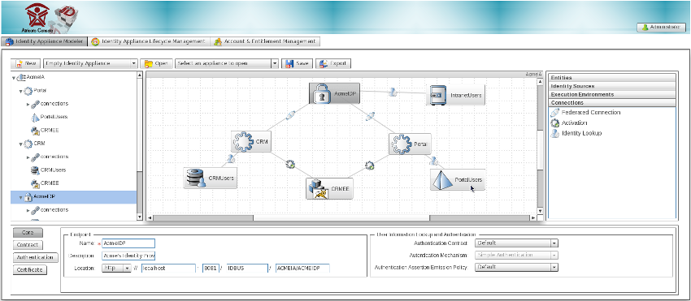
The action bar offers operations related to the identity appliance. These are mainly concerned with managing the workspace within which an identity appliance model is bootstrapped and edited. For instance, an identity appliance can be scaffolded by clicking on the "New" button, or we can continue working on an existing appliance by selecting it and clicking on the "Open" button.
The Palette consists of four drawers. The "Entities" drawer holds the items used to specify the primary agents of the identity architecture, namely the Identity Provider and Service Provider. The "Identity Sources" drawer holds items used to specify the specific storage mechanism which will be leveraged to back authentication and authorization processes. The "Execution Environments" drawer holds items used to specify the application platform upon which service providers can execute. Finally, the "Connections" drawer holds the items used to connect the building blocks of the identity architecture together.
The Diagram Canvas plays the role of placeholder for all of the elements constituting an identity appliance model.
The Appliance Browser, on the left side of the Diagram Canvas, provides a tree view of the identity appliance model. Any change that's made to an identity appliance element is automatically reflected on the tree. Any time an element is selected on the tree, it is also selected on the Diagram Canvas and its details are presented on the property sheet panel.
The property sheet section is at the bottom of the Identity Appliance Modeler screen. It's the entry point for accessing the details of identity appliance elements, and it's where editing actions on those details take place.
In order to add an element to an existing identity appliance model, simply click on one of the items from the Palette and then drag and drop it onto the Diagram Canvas. Connecting two elements is achieved by dragging onto the diagram an item of the required connection type, then selecting the source and target elements you wish to associate together.
You can edit by clicking the element in question from the Diagram Canvas and selecting the field you wish to update within the property sheet section. Element removal is achieved by clicking on the red cross that appears when a rollover action is performed on an element of the diagram.
The Identity Architect is also in control of transforming the identity architecture model into a fully executing artifact. As with the Identity Appliance Modeler, it's a simple point-and-click process. The Identity Appliance Life Cycle Management screen offers a grid-based layout, within which columns are used to represent the different states possible for the identity appliance artifact.
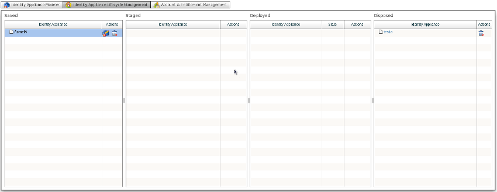
Switching the identity appliance from one state to another is achieved by dragging the identity appliance item from the column representing the source state, and dropping it into the column representing the target state. For instance, in order to build an identity appliance: select and drag the corresponding item from the "Saved" column and drop it into the "Staged" column. Additionally, an identity appliance in the "Deployed" state can be started and stopped with the buttons located to the right of the item. TODO: insert identity appliance lifecycle management screenshot
JOSSO2 is bundled with an out-of-the-box identity store - known as Identity Vault - onto which user accounts and entitlements can be provisioned. Identity Vaults can be bound to both Identity and Service Provider entities. The identity vault is built on an Apache Derby relational database system.
Both accounts and groups can be provisioned. Accounts can also be associated to one or more groups in order to serve as the input for Role-Based Access Control (RBAC).
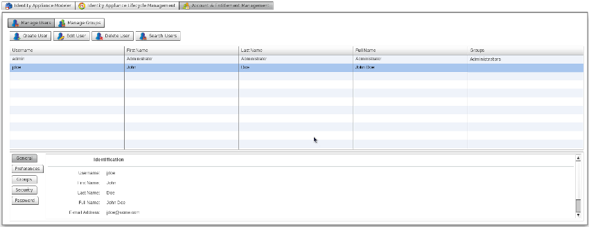
Clicking on the "Manage Users" button displays the screen through which the complete life cycle of user accounts can be managed: provisioning, detail editing, entitlement association and de-provisioning.
Here's how the Account Management screen is structured : TODO: insert account management screenshot
An identity appliance contains the definitions for the identity architecture. By leveraging the Identity Appliance Modeler, you can define identity appliances for realizing standards-based Internet SSO settings. Additional identity appliance flavors will be supported in future releases.
An identity appliance contains instances of the element types that conform to the identity appliance meta-model. These constructs can be dragged from the palette view and dropped into the identity appliance diagram. The identity services that will be available upon identity appliance deployment will be driven by the definitions that are part of this appliance. For instance, if we've specified a SAML2 Identity Provider (IdP), the endpoints for the chosen SAML profile and bindings will be enabled. Moreover, if this IdP is connected to an LDAP (Lightweight Directory Access Protocol), authentication will be based on user entries within the target directory. Multiple identity appliances can run simultaneously, representing distinctive facets of a large infrastructure, or - within a multi-tenant setting - the Federated Identity services for a specific tenant. Identity Appliances will run isolated from one another, yet be managed centrally through the Atricore Console.
An identity appliance can be created from scratch or scaffolded by building on reference identity appliance templates. Let's explore these options in more detail.
Starting from scratch is usually the best option when your setting is very particular - there is template available that will match your setting. To create a new appliance, press on the "New" button with the "Empty Identity Appliance" item set on the select box on the right. This will open a dialog for specifying information to identify the target identity appliance.
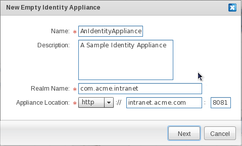
The Name field contains the unique identifier for the identity appliance. Choose an identifier that is within the parameters of the allowed character set, and that is not in use by another identity appliance.
The Description field is an informative field used to describe the function of the identity appliance. Characteristics like the owner's organization name and the type of service that will be implemented through the appliance can be defined here.
The Realm Name provides a unique namespace for the elements contained by the identity appliance. For instance, artifacts produced by an identity appliance transformation process: module identifiers, java classes, etc. will be qualified using the Realm Name. The Realm Name and the Identity Appliance Name are the building blocks of the fully qualified identity appliance name, or FQIAN.
The Appliance Location specifies the host name, and the port where identity endpoints for the identity appliance will be bound. We strongly suggest that you use a fully qualified host name, so that the identity appliance services are decoupled from a specific physical host.
Once the fields are filled in, press the "Accept" button. This will create an empty identity appliance, enabling the identity appliance modeling process.
Scaffolding allows you to automatically generate a full blown Internet SSO setting based on an existing identity appliance template. By building on user-supplied attributes of the expected Internet SSO setting, Atricore Console is able to deliver a working identity appliance. This acts as the "scaffolding" over which the identity architect can layer their own custom identity appliance.
In order to scaffold an identity appliance, select the "Federated SSO Baseline" item and click on the "New" button. This will open a wizard application which will guide you through several steps for gathering the high-level attributes of the Internet SSO setting to be scaffolded.
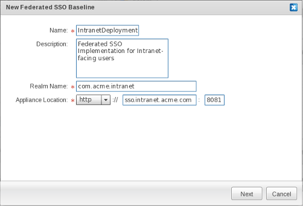
The first step if filling in information to identify the identity appliance.
Field Descriptions
|
Field |
Description |
|
Name |
Unique identifier of the identity appliance. Choose an identifier that is within the parameters of the allowed character set, and that is not in use by another identity appliance. |
|
Description |
Describe the function of the identity appliance. Common descriptors are the owner organization and the type of services that will be implemented through the appliance. |
|
Realm Name |
Unique namespace for the elements contained by the identity appliance. For instance, artifacts produced by the identity appliance transformation process: module identifiers, java classes, etc. will be qualified using the Realm Name. The Realm name and the Identity Appliance Name are the building blocks of the fully qualified identity appliance name (FQIAN). |
|
Appliance Location |
Specifies the host name, and the port where identity endpoints for the identity appliance will be bound. We strongly suggest that you use a fully qualified host name, so that the identity appliance services are decoupled from a specific physical host. |
Once the fields are filled in, press the "Next" button to move on to the second step.
The second step involves setting up the building blocks of the trust system, which is based on Public Key Infrastructure (PKI). The trust system provides for peer authentication, integrity, confidentiality and non-repudiation in a transport-agnostic fashion. The SAML standard - which JOSSO supports - builds on PKI to guarantee these security attributes for SSO message exchanges. The requested information is mainly used for providers to access private and public key pairs.
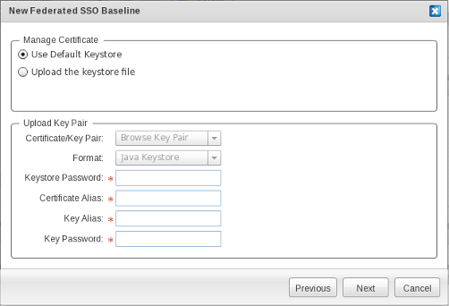
Field Descriptions
|
Field |
Description |
|
Use default keystore |
Use the built-in keystore part of the distribution. Only recommended for sandbox settings, where security is not really an issue. Within a production system, we strongly recommend using a custom keystore. |
|
Upload the keystore file |
Select this option to use a custom keystore. |
|
Certificate/Key Pair |
Allows selection of the desired keystore file from the local file system. |
|
Format |
The Keystore Format for the uploaded keystore file. Choose "Java Keystore" which is currently the only supported keystore format. We expect support for PKCS#12 in future releases. |
|
Keystore Password |
Password that providers use to open the keystore and obtain private and public certificate pairs required for securing SSO exchanges. |
|
Certificate Alias |
Identifier of the keystore entry for the public key. The public key can, for instance, be used to validate the digital signature conveyed in SAML messages, to identify the requestor and the integrity of the messages. |
|
Key Alias |
Name of keystore entry for obtaining the corresponding private key. The private key can, for instance, be used to digitally sign SAML messages. |
|
Key Password |
The password required to obtain the private key. |
Press the "Next" button to continue.
The third step concerns Identity Provider-facing authentication and backing Identity Store preferences.
Within the "Basic Authentication" section, you can specify preferences concerning user authentication. By default, only basic authentication - authentication based on username and password credentials - can be selected. In terms of where user and entitlement information is located, several storage technologies and access protocols can be used.
Within the "Users Repository" section, you'll mainly be specifying the identity source that will be attached to the Identity Provider, and which will be used for obtaining user details and entitlement entries.
Field Descriptions
|
Field |
Description |
|
Obfuscate Password |
This setting determines whether passwords for user accounts will be kept in clear text or not. By default, passwords will be obfuscated using a hashing algorithm (e.g. MD5) in the identity store, so that even if this piece is compromised user passwords will not be disclosed. |
|
User Repository Name |
A unique identifier for the identity source used by the IdP. |
|
User Repository Type |
The type of user repository to be employed. Choosing "Identity Vault" will cause the IdP to use the built-in identity source based on a relational database management system (RDBMS) and schema. The identity vault is the target for provisioning actions performed through the Account and Entitlement Management interface. This is the suggested option if you want JOSSO to use a dedicated identity store, and wish to benefit from GUI-based and integrated account and entitlement management. Choosing "Identity Source" will cause the IdP to use an external identity source. |
|
Identity Source Type |
The type of identity source that will be attached to the IdP. Choosing "Database" as the identity source will cause the IdP to connect to an RDBMS identity source based on a default user schema (TODO: refer to user DDL or ER diagram ? ). Connection properties for the database instance will be requested in the next wizard step. Choosing "LDAP" as the identity source will cause the IdP to connect to a Directory accessible through the LDAP protocol. Connection properties for the LDAP directory will be requested in the next step. Choosing "XML" as the identity source will cause the IdP to build on XML documents to obtain account and entitlement entries. This is recommended only for sandbox settings. Location information for the XML documents holding user credentials will be requested in the next step. |
Press the "Next" button to continue.
If you choose "Database" as your identity source, when you go on to the next step you'll need to enter the connection properties for the database instance used by the IdP to collect user details and entitlement entries.
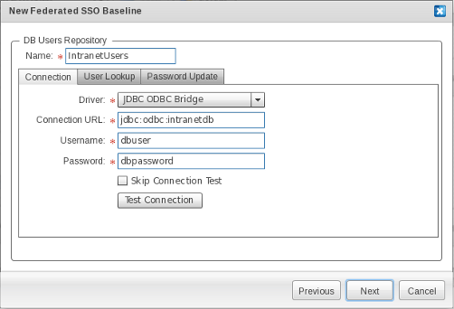
Within the "Connection" screen, connection attributes can be specified.
|
Field |
Description |
|
Driver |
The identity appliance scaffolding wizard provides only one option to connect with a database system: through a JDBC-ODBC driver. This is meant for a Windows-based system - ODBC is a Windows standard- but it can also be used from a Linux host. Upon completion of the wizard, a native JDBC (type 4) driver can be substituted if the RDBMS vendor did not supply an ODBC driver, or if JOSSO is being hosted in a system that is running the Unix operating system (e.g. Linux). |
|
Connection URL |
The connection string employed in order to establish a connection to the target database, in JDBC-ODBC Bridge format. |
|
Username |
The username portion of the credentials set, which will be passed along once a connection to the target database has been established. |
|
Password |
The password portion of the credentials set, which will be passed along once a connection to the target database has been established. |
|
Skip Connection Test |
Check in case the connection against the database will not be verified. |
|
Test Connection |
Click to verify that JOSSO is able to reach the database using the connection attributes you've supplied. This avoids the potential for show stopper issues at the time of execution which could, for instance, break authentication. |
Within the "User Lookup" tab you can supply SQL queries that will be used by an Identity Provider to retrieve user credentials and details, as well as roles. Supplying this information is required, given that JOSSO is schema-agnostic and therefore requires the directives in order to adapt to an arbitrary schema.
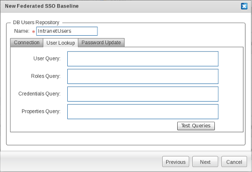
|
Field |
Description |
|
User Query |
SQL query for selecting a record from the table that is responsible for storing users. If using the reference schema, you should employ the following query : TODO: insert query |
|
Roles Query |
SQL query for selecting the role records for a selected user. If you're using the reference schema, you should employ the following query: TODO: insert query |
|
Credentials Query |
SQL query for selecting the credential records for a selected user. If using the reference schema, you should employ the following query : TODO: insert query |
|
Properties Query |
SQL query for selecting custom user attributes that will be conveyed as claims in authentication assertions. If using the reference schema, you should employ the following query : TODO: insert query |
|
Test Queries |
Click to make sure that SQL queries are well-formed and will return the expected information. |
Within the "Password Update" screen you can supply the SQL queries used for self-services such as password change.
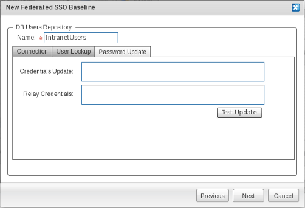
|
Field |
Description |
|
Credentials Update |
SQL update statement for changing user credentials. If using the reference schema, you should employ the following query : TODO: insert query |
|
Relay Credentials |
SQL update statement for updating the credentials backing Remember Me functionality. If using the reference schema, you should employ the following query : TODO: insert query |
|
Test Update |
Click to ensure that update statements are well-formed and can be expected to perform the required changes. |
If you choose an LDAP Identity source, at the next step in the process you will be prompted to enter the connection properties for the LDAP Directory instance that is used by the identity provider to retrieve user details and the corresponding entitlement entries.
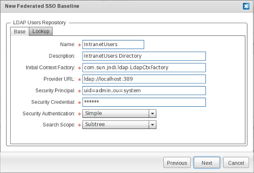
|
Field |
Description |
|
Name |
|
|
Description |
|
|
Initial Context Factory |
The fully qualified class name of the InitialContextFactory implementation. This defaults to the Sun LDAP provider implementation com.sun.jndi.ldap.LdapCtxFactory. |
|
Provider URL |
Enter the LDAP URL for the LDAP Directory Server. This defaults to "ldap://localhost:389", hence expecting a directory server listening on the standard port available in the same server JOSSO (and identity appliances) execute. |
|
Security Principal |
Enter the principal for authenticating the caller to the service. This defaults to "uid=admin,ou=system", the default for OpenLDAP. |
|
Security Credential |
Enter the credential for the security principal that will be passed on to authenticate the caller to the service. The semantics of this field depend on the chosen authentication mechanism, as described below. |
|
Security Authentication |
Determines what authentication mechanism will be used to authenticate the caller to the service. Available options are "None" for anonymous binding, "Simple" for password-based authentication and "Strong" for authentication using X.509 client certificates. |
|
Search Scope |
Enter the search strategy used to query user and role entries in the target LDAP directory. The default is "Subtree". Setting the search scope to "Base" queries within the specified contexts. Setting the search scope to "One" will cause LDAP queries to search only the immediate children of the LDAP object corresponding to the DN for users and roles. Setting it to "Subtree" will query the entire LDAP directory subtree below the search baseDN for users and roles. TODO: children ? |
On the "Lookup" screen you can determine how user and role entries are to be retrieved. This is required in order to access identity data that responds to arbitrary schemas. This avoids forcing migrating user data to a product-specific user schema, allowing you to reuse existing identity silos independently of how user data is structured.
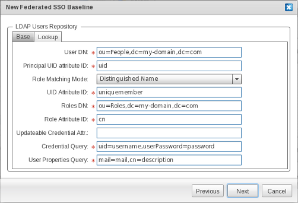
|
Field |
Description |
|
User DN |
Enter the "distinguished name" (DN) that will be used as context for user searches. This defaults to "ou=People, dc=my-domain, dc=com". |
|
Principal UID Attribute ID |
Enter the LDAP attribute name that holds the distinctive identifier of the user. This defaults to "uid". |
|
Role Matching Mode |
Select the mechanism to obtain the roles for a user. Every mode builds on a a specific user attribute to obtain user roles. If you select "distinguished name", roles will be retrieved by using the DN of the user entry as the key. If "user id" is selected, roles will be retrieved using the User ID. If "user principal" is selected TODO: not sure of this option semantics This defaults to "distinguished name". |
|
UID Attribute ID |
Enter the attribute identifier holding the user id. This defaults to "uniquemember". |
|
Role Attribute ID |
Enter the attribute identifier for the role name. This defaults to "cn". |
|
Updateable Credential Attr |
TDB: explain semantics |
|
Credential Query |
Enter the query used to obtain username and password values from the user entry. The left-hand part represents the LDAP attribute name, while the right-hand part identifies the name variable name holding its value. In this case, "username" identifies the placeholder for the username part and "password" identifies the placeholder for the password part. Both need to be defined in order for the identity provider to retrieve the user credentials required for authentication. This defaults to uid=username, userPassword=password |
|
User Properties Query |
Enter the query used to obtain user attributes from the user entry. The left-hand part represents the LDAP attribute name, while the right-hand one identifies the name variable name, holding its value. In this case, the left-hand part contains the LDAP attribute name for the user attribute to be extracted, while the right-hand part holds the property name that will be bound to it. This defaults to mail=mail,cn=description. |
In instances where you choose an XML identity source, you'll need to enter the preferences for retrieving user details and entitlement entries from XML documents when you move on to the next step.
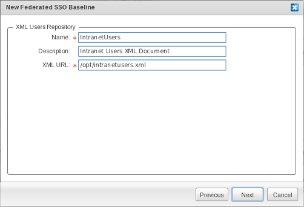
|
Field |
Description |
|
Name |
An identifier of the XML Identity Source. |
|
Description |
A descriptive text for the XML Identity Source. |
|
XML URL |
The absolute location for the XML document containing user and entitlement entries. |
Press "Next" to move on to the next step.
Up to this point we've mainly specified a minimum set of characteristics in order to implement the IdP, which will play the asserting party role. Next, we'll specify the Service Provider (SP), which will rely upon authentication assertions pushed by the IdP.
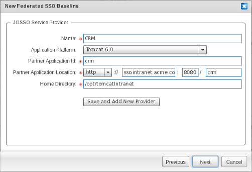
|
Field |
Description |
|
Name |
The unique identifier of the SP. |
|
Application Platform |
Specifies the execution environment hosting the SP. Within this wizard, only a limited set of execution environments, namely JBoss and Tomcat execution environments, are available for usage. Additional execution environments are available in the "Execution Environments" palette drawer. |
|
Partner Application Id |
The "Partner Application Id" field is a unique identifier for the JOSSO partner application that's consuming the services provided by the SP. There is a one-to-one relationship between a partner application and an SP. The SP acts as a delegate of the partner application for negotiating with identity and access management services. |
|
Partner Application Location |
Those of you who are familiar with JOSSO1 might notice that the term "Partner Application", which is employed in this first product generation, has a meaning that corresponds to the term "Service Provider", which is the term used in the SAML standard. JOSSO2 builds on legacy JOSSO1 Agents in order to realize SSO-enabling usage scenarios. JOSSO2 provides a compatibility layer, that complies with both the front and back-channel contracts of the JOSSO1 Gateway, making a JOSSO2 server instance appear as a plain old JOSSO1 Gateway. Given the partner application and SP semantic correspondence, Atricore Console enforces the use of the same identifier. As you type the SP name, the partner application identifier is automatically filled with this. |
|
Home Directory |
Target execution environment installation. This path must be reachable from the JOSSO2 server instance. This execution environment will be available for activation at design-time from the identity appliance model. As of JOSSO 2.0.2 there is no support for activating remote execution environments. |
|
Add New Service Provider |
My clicking on "Add New Service Provider" you can instantiate additional SPs. |
When you click "Next", a screen will appear showing the identity appliance settings submitted through the wizard. Click on the "Confirm" button if they are correct, or return and adjust the settings in previous steps. When you click the "Confirm" button the identity appliance will be created.
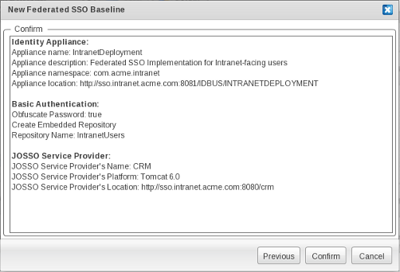
TBD: add introduction
An Identity Vault is a type of Identity Source which is built in to the product. The account and entitlement management functionality can only act on ID Vaults instances. The ID Vault is based on an Apache Derby relational database engine. An ID Vault, like any identity source, can be bound to both an Identity Provider (IdP) and a Service Provider (SP). In the former case, the ID Vault is used to back authentication processes. In the latter case, the ID Vault is used to support account linkage, for augmenting IdP-facing claims with those provided by the local ID Vault.
An Identity Vault is represented in the figure below : TODO: insert identity vault figure
Using an ID Vault over a general purpose identity source allows you to leverage the existing visual account and entitlement management facilities, as well as decrease the time to deployment; since the activities involved in setting up an external identity store and linking it to the identity infrastructure are not required.
From the Palette, click "Identity Vault" in the "Identity Sources" drawer.
Click on and drag the "Identity Vault" element to the preferred location within the Diagram Canvas.
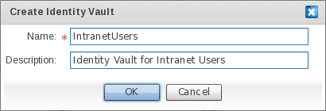
On the "New Identity Vault" window, enter the name of the "Identity Vault" element.
Optionally, enter a description for the ID Vault definition that is being created.
LDAP (Lightweight Directory Access Protocol) is a software protocol which enables anyone to locate organizations, individuals and other resources - such as files and devices - in a network, whether on the public Internet or on a corporate Intranet.
An LDAP Identity Source is a type of identity source which can be accessed through the LDAP protocol and which exposes user entries in a hierarchical form, responding to an arbitrary user schema.
TODO: insert identity source figure
LDAP Identity Sources can be bound to both Identity and Service Providers. Connecting an IdP to an LDAP Identity Source implies that queries for retrieving user records to back authentication and related processes will be performed against a directory using the LDAP Procotol. Connecting an SP to an Identity Source implies that queries meant to authenticate users locally, or to augment IdP-facing claims, will be backed by an directory accessible through the LDAP protocol. In order to adapt to arbitrary schemas - and realize schema-agnosticity - the identity source can be customized in terms of the LDAP queries used to access user identity records.
From the Palette, click "LDAP Identity Source" in the "Identity Sources" drawer.
Click on and drag the "LDAP Identity Source" element to the preferred location within the Diagram Canvas.
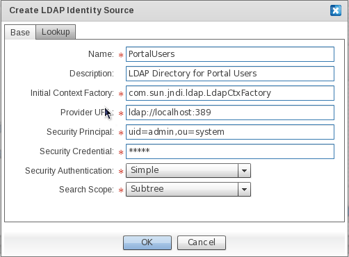
In the "Create LDAP Identity Source" window, enter the name of the LDAP Identity Source element to be added to the Identity Appliance Diagram.
Field Descriptions
|
Field |
Description |
|
Name |
|
|
Description |
|
|
Initial Context Factory |
The fully qualified class name of the InitialContextFactory implementation. This defaults to the Sun LDAP provider implementation com.sun.jndi.ldap.LdapCtxFactory. |
|
Provider URL |
Enter the LDAP URL for the LDAP Directory Server. This defaults to "ldap://localhost:389", thus expecting a directory server listening on the standard port available in the same server that JOSSO (and the identity appliance) executes. |
|
Security Principal |
Enter the security principal for authenticating the caller to the service. This defaults to "uid=admin,ou=system", the default for OpenLDAP. |
|
Security Credential |
Enter the credential for the security principal that will be passed on to authenticate the caller to the service. The semantics of this field depend on the chosen authentication mechanism, as described below. |
|
Security Authentication |
Determines what authentication mechanism will be used to authenticate the caller to the service. Available options are "None" for anonymous binding, "Simple" for password-based authentication and "Strong" for authenticating using X.509 client certificates. |
|
Search Scope |
Enter the search strategy used to query user and role entries in the target LDAP directory. The default is "Subtree". Setting the search scope to "Base" queries within the specified contexts. Setting the search scope to "One" will cause LDAP queries to search only the immediate children of the LDAP object corresponding to the DN for users and roles. Setting it to "Subtree" will query the entire LDAP directory subtree below the search baseDN for users and roles. TODO: children ? |
On the "Lookup" screen, you can determine how user and role entries are to be retrieved. This is required in order to access identity data responding to arbitrary schemas. The forced migration of user data to a product-specific user schema is avoided, allowing you to re-use existing identity silos independently of user data structure.
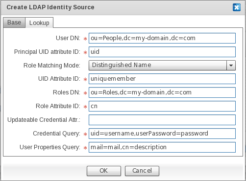
|
Field |
Description |
|
User DN |
Enter the Distinguished Name (DN) that will be used as the context for user searches. This defaults to "ou=People,dc=my-domain,dc=com". |
|
Principal UID (User Identity) Attribute ID |
Enter the LDAP attribute name that holds the distinctive identifier of the user. This defaults to "uid". |
|
Role Matching Mode |
Select the mechanism used to obtain the roles for a user. Every mode builds on a specific user attribute to obtain user roles. If "Distinguished Name" is selected, roles will be retrieved by using the DN of the user entry as the key. If "User ID" is selected, roles will be retrieved by using the user identity. If "User Principal" is selected TODO: not sure of this option semantics This defaults to "Distinguished Name". |
|
UID Attribute ID |
Enter the attribute identifier holding the UID. This defaults to "uniquemember". |
|
Role Attribute ID |
Enter the attribute identifier for the role name. This default to "cn". |
|
Updatable Credential Attr (Attribute) |
TDB: explain semantics |
|
Credential Query |
Enter the query used to obtain username and password values from the user entry. The left-hand part represents the LDAP attribute name, while the right-hand one identifies the variable name that holds its value. In this case, "username" identifies the placeholder for the username portion; and "password" identifies the placeholder for the password portion. Both need to be defined in order for the IdP to retrieve the user credentials that are required for authentication. This defaults to uid=username, userPassword=password. |
|
User Properties Query |
Enter the query used to obtain user attributes from the user entry. The left-hand part represents the LDAP attribute name, while the right-hand one identifies the variable name holding its value. In this case, the left-hand portion contains the LDAP attribute name for the user attribute to be extracted, while the right-hand portion holds the property name that will be bound to it. This defaults to mail=mail,cn=description. |
Click on OK to confirm LDAP Identity Source element creation.
Click on Cancel to abort LDAP Identity Source element creation.
RDBMS stands for Relational Database Management System. RDBMS data is structured in database tables, fields and records. Each RDBMS table consists of database table rows. Each database table row consists of one or more database table fields.
An RDBMS Identity Source is a type of identity source which is accessible through the vendor's JDBC (Java Database Connectivity) driver. The JDBC driver hides the internal details of the protocol used to access databases.
TODO: insert identity source figureWithin an RDBMS, user details are stored in database rows grouped using tables. Each single user attribute is stored in table fields. User information might span to more than one table. For instance, user details can be spanned in two different tables: one for holding user attributes and another for holding the related entitlement records.
RDBMS Identity Sources can be bound to both Identity and Service Providers. Connecting an IdP to an RDBMS Identity Source implies that queries for retrieving user records (in order to back authentication and related processes) will be performed against a database using the supplied JDBC driver.
Connecting a Service Provider to an Identity Source implies that queries meant to authenticate users locally, or to augment IdP-facing claims, will be backed by a database made accessible through the supplied JDBC driver.
In order to adapt to arbitrary schemas - and realize schema-agnosticity - the identity source can be customized in terms of the SQL queries that are used to access user identity records.
TBD: mention how to contribute third-party JDBC drivers
From the Palette, click "DB Identity Source" in the "Identity Sources" drawer.
Click on and drag the "DB Identity Source" element to the preferred location within the Diagram Canvas.
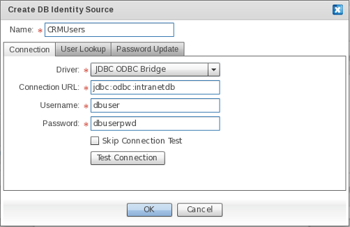
In the "Create DB Identity Source" window, enter the name of the DB Identity Source element to be added to the identity appliance diagram.
Field Descriptions
Connection attributes can be specified within the "Connection" screen.
|
Field |
Description |
|
Driver |
The only available option for connecting with a database system, that is allowed from the identity appliance scaffolding wizard, is through a JDBC-ODBC driver. This approach is tailored to a Windows-based system (Open Database Connectivity, or ODBC, is a Windows standard) but it can also be made to work from a Linux host. Upon completion of the scaffolding wizard, a native JDBC (Type 4) driver can be used, in case the RDBMS vendor has not supplied an ODBC driver, or if JOSSO is being hosted in a system running the Unix operating system (e.g. Linux). |
|
Connection URL |
The connection string employed to establish a connection to the target database, in JDBC-ODBC Bridge format. |
|
Username |
The "Username" portion of the credentials set, which will be passed along upon establishment of a connection to the target database. |
|
Password |
The "Password" portion of the credentials set, which will be passed along upon establishment of a connection to the target database. |
|
Skip Connection Test |
Check in case the connection against the database will not be verified. |
|
Test Connection |
Click to verify that JOSSO is able to reach the database using the connection attributes that have been supplied. This avoids "show stopper" issues at execution time which can, for instance, break authentication. |
Within the "User Lookup" tab you can supply the SQL queries that will be used by an Identity Provider to retrieve user credentials and details, as well as roles. Supplying this information is required, since JOSSO is schema-agnostic and therefore requires the directives in order to adapt to an arbitrary schema.
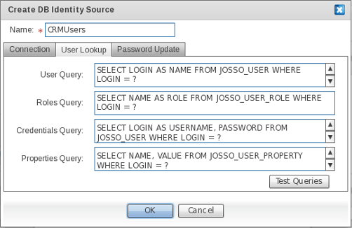
|
Field |
Description |
|
User Query |
SQL query for selecting the record from the table that stores users. If you're employing the reference schema, use the following query : TODO: insert query |
|
Roles Query |
SQL query for selecting the role records for the selected user. If you're employing the reference schema, use the following query : TODO: insert query |
|
Credentials Query |
SQL query for selecting the credential records for the selected user. If you're employing the reference schema, use the following query : TODO: insert query |
|
Properties Query |
SQL query for selecting custom user attributes that will be conveyed as claims in authentication assertions. If you're employing the reference schema, use the following query : TODO: insert query |
|
Test Queries |
Click to make sure that SQL queries are well formed, and will return the expected information. |
Within the "Password Update" screen you can supply the SQL queries employed for self-services, such as password change.
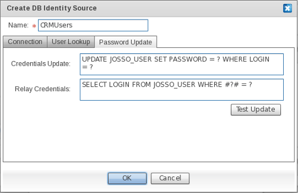
|
Field |
Description |
|
Credentials Update |
SQL update statement for changing user credentials. If you're employing the reference schema, use the following query : TODO: insert query |
|
Relay Credentials |
SQL update statement for updating the credentials backing Remember Me functionality. If you're employing the reference schema, use the following query : TODO: insert query |
|
Test Update |
Click to make sure that update statements are well-formed, and will perform the required changes. |
Click on OK to confirm DB Identity Source element creation.
Click on Cancel to abort DB Identity Source element creation.
XML (Extensible Markup Language) is a flexible way to create common information formats and share both the format and the data on the Internet, intranets, and elsewhere. XML's design goals emphasize simplicity, generality, and Internet usability. Although the design of XML focuses on documents, it is widely used for the representation of arbitrary data structures, for example in Web services. An XML identity source is a type of identity source that is based on a hierarchical information model. The basic building blocks of XML are elements and attributes. Elements describe data, whereas attributes are like the properties of an element, in that they provide further definition of the element. The semantics of XML documents are defined using XML schemas, through which it becomes possible to define the individual elements and attributes, and to assign valid types to them. An XML Identity Source needs to be backed by a single XML document responding to a JOSSO-specific schema. Such a document should be stored in a file system that can be accessed by the JOSSO server. Both user details and entitlement records are stored in a single XML document. User credentials are stored in a separate file due to the sensitive nature of the information. Here's a sample of XML documents, showing user details and entitlement records:
<josso-users>
<users>
<user>
<name>user1</name>
<properties>
<property>
<name>user.name</name>
<value>User 1 Name</value>
</property>
<property>
<name>user.lastName</name>
<value>User 1 Last Name</value>
</property>
<property>
<name>user.registrationDate</name>
<value>2004/09/11</value>
</property>
</properties>
<roles>role1 , role2</roles>
</user>
<user>
<name>user2</name>
<properties>
<property>
<name>user.name</name>
<value>User 2 Name</value>
</property>
<property>
<name>user.lastName</name>
<value>User 2 Last Name</value>
</property>
<property>
<name>user.registrationDate</name>
<value>2004/09/10</value>
</property>
</properties>
<roles>role2</roles>
</user>
<user>
<name>user3</name>
<properties>
<property>
<name>user.name</name>
<value>User 3 Name</value>
</property>
<property>
<name>user.lastName</name>
<value>User 3 Last Name</value>
</property>
<property>
<name>user.registrationDate</name>
<value>2005/01/1</value>
</property>
</properties>
<roles>role1</roles>
</user>
</users>
<roles>
<role>
<name>role1</name>
</role>
<role>
<name>role2</name>
</role>
</roles>
</josso-users>
Here's a sample XML document holding the credential set for the users defined in the previous document :
<josso-credentials>
<credential-set>
<key>user1</key>
<credential>
<name>username</name>
<value>user1</value>
</credential>
<credential>
<name>password</name>
<value>7ea2bd72bfc7dabdfecc0b5760ebcf52</value>
</credential>
<credential>
<name>userCertificate</name>
<value>
-----BEGIN CERTIFICATE-----
MIIDjjCCAvegAwIBAgIBAjANBgkqhkiG9w0BAQQFADCBijELMAkGA1UEBhMCVVMx
DDAKBgNVBAgTA04vQTEMMAoGA1UEBxMDTi9BMRswGQYDVQQKExJKT1NTTyBPcmdh
bmlzYXRpb24xETAPBgNVBAsTCFNlY3VyaXR5MRIwEAYDVQQDEwlqb3Nzby5vcmcx
GzAZBgkqhkiG9w0BCQEWDGNhQGpvc3NvLm9yZzAeFw0wNDExMTExOTQ3MTFaFw0w
NTExMTExOTQ3MTFaMHUxCzAJBgNVBAYTAlVTMQwwCgYDVQQIEwNOL0ExGzAZBgNV
BAoTEkpPU1NPIE9yZ2FuaXNhdGlvbjELMAkGA1UECxMCSVQxDjAMBgNVBAMTBXVz
ZXIxMR4wHAYJKoZIhvcNAQkBFg91c2VyMUBqb3Nzby5vcmcwgZ8wDQYJKoZIhvcN
AQEBBQADgY0AMIGJAoGBAKvwai6JYYycNRHfLyJNMehfUiv9tgEJcejTnsR1AwMS
TFlk95RY09/T7vmDNaWw+aupFVu3yg+UOwc4lrh0nIR74HXbnCwBftyVYnqv0TJu
VwFakOoRuwTnFyUw7WvzLkDzgqddoiua5f4jVpHCAeq8KuCDXmE9v6BUi2QPrbTZ
AgMBAAGjggEWMIIBEjAJBgNVHRMEAjAAMCwGCWCGSAGG+EIBDQQfFh1PcGVuU1NM
IEdlbmVyYXRlZCBDZXJ0aWZpY2F0ZTAdBgNVHQ4EFgQUK9fZV0osJ85BRSQSAIZx
tQZO9oUwgbcGA1UdIwSBrzCBrIAU+L2IUzRQ67GsKyNKdBK7nW5TsDuhgZCkgY0w
gYoxCzAJBgNVBAYTAlVTMQwwCgYDVQQIEwNOL0ExDDAKBgNVBAcTA04vQTEbMBkG
A1UEChMSSk9TU08gT3JnYW5pc2F0aW9uMREwDwYDVQQLEwhTZWN1cml0eTESMBAG
A1UEAxMJam9zc28ub3JnMRswGQYJKoZIhvcNAQkBFgxjYUBqb3Nzby5vcmeCAQAw
DQYJKoZIhvcNAQEEBQADgYEAaWaZypRdY7mZyKGOmJI32ElBlAmyLN+AN3TOMmg2
oi9Pgf7xCGoQ6nsuz52pwPAfL+zhfroCz2ZgY7wMf3BT5dVnZKF97b3KDwMABvTT
5wt3DcNSmhVCQDRkXDoTfclAeMNg7MXSy7E6XWhCwenu2P4llBCktAlclYFEzKkR
sXY=
-----END CERTIFICATE-----</value>
</credential>
</credential-set>
<credential-set>
<key>user2</key>
<credential>
<name>username</name>
<value>user2</value>
</credential>
<credential>
<name>password</name>
<value>3d281d21c49d79f586af2cdc4419b18b</value>
</credential>
</credential-set>
</josso-credentials>
From the Palette, click "XML Identity Source" in the "Identity Sources" drawer.
Click on and drag the XML Identity Source element to the preferred location within the Diagram Canvas.
In the "Create XML Identity Source" window, enter the name of the "XML Identity Source" element to be added to the Identity Appliance Diagram.
You'll need to enter the preferences for retrieving user details and entitlement entries from XML documents.
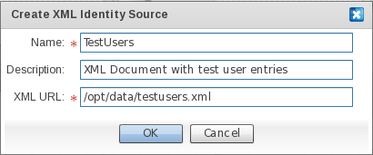
|
Field |
Description |
|
Name |
The identifier of XML Identity Source. |
|
Description |
A descriptive text for the XML Identity Source. |
|
XML URL |
The absolute location for the XML document holding user and entitlement entries. |
- 7.1. Add an IdP to the Identity Appliance
- 7.2. Set Up the Identity Store of the Identity Provider
- 7.2.1. Using an Identity Vault as the Authoritative Source for the Identity Provider
- 7.2.2. Using an LDAP Directory as Authoritative Source for the Identity Provider
- 7.2.3. Using an RDBMS as Authoritative Source for the Identity Provider
- 7.2.4. Using XML files as the Authoritative source for the Identity Provider
In order to enable an Internet SSO setting you'll need at least one entity playing the role of Identity Provider (IdP). An IdP manages your identity, and provides an authentication service for client applications. IdPs authenticate users and issue security tokens - like Security Assertions Markup Language (SAML). Security Tokens contain user IDs and other identity properties of the user (claims). Examples of some IdPs are: Windows Live ID, Google Accounts and Facebook.
Security Tokens issued by the IdP - upon successful user authentication - are pushed to the parties who rely upon them, commonly known as Service Providers. A Service Provider (SP) is an application that relies on the claims issued by an IdP to authorize a user, and to release appropriate access to that user.
We're assuming that you are beginning with an empty Identity Appliance, with no defined IdP.
From the Palette, click "Identity Provider" in the "Entities" drawer.
Drag the "Identity Provider" element to the preferred location within the Diagram Canvas.
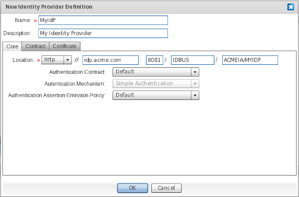
In the "New Identity Provider Definition" window, enter the name of the IdP.
On the "Core" screen, specify how the endpoints of the IdP will be reachable by consumers. The default location is built using attributes supplied at identity appliance-creation time. For the sake of consistency, we strongly suggest that you leave these default attributes "as-is".
Field Descriptions
|
Field |
Description |
|
Location |
The access protocol - whether http or https. Host name, port and context path to which the endpoints for the IdP will be bound. Clients will refer to services provided by the IdP using URIs (Uniform Resource Identifiers) that are qualified using the location value. We strongly suggest that you use a fully qualified host name, so that the identity appliance services are decoupled from a specific physical host. |
|
Authentication Contract |
The message contract for submitting input claims, such as user credentials, to the IdP. The default (and the only available contract) builds on JOSSO-specific parameters, which are submitted whenever simple web-based authentication is attempted. |
|
Authentication Mechanism |
The means by which users are authenticated. The only supported authentication mechanism is Simple Authentication which performs the identification of users based on username and password. |
|
Authentication Assertion Emission Policy |
Used to customize how assertions are issued, upon successful authentication. The authentication assertions issued are conveyed via security tokens, which are pushed to relying parties. |
On the Contract screen, specify the SAML Profiles and Bindings to be enabled, as well as the level of security for the artifacts involved in message exchanges between SPs and the IdP.
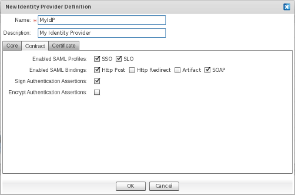
Field Descriptions
|
Field |
Description |
|
Enabled SAML Profiles |
The SAML Profile to activate for this IdP. These mainly represent the usage scenarios realized by the IdP. The most important SAML profile is the "Web Browser Single Sign-On Profile", which can be enabled by selecting the SSO checkbox. Select the SLO checkbox to enable Single Logout Support. |
|
Enabled SAML Bindings |
The SAML bindings to be enabled for the chosen SAML profiles. Specifies the mapping of a SAML protocol message onto standard messaging formats and/or communications protocols. Select the Http Post checkbox to convey SAML messages through HTTP Post. Select the Http Redirect checkbox to convey SAML messages through HTTP Get. Select the Artifact checkbox to convey SAML messages through the SAML Artifact Binding, which builds on both HTTP Redirect and SOAP bindings for exchanging SAML messages. Select the SOAP checkbox to convey SAML messages through SOAP over HTTP(s). |
|
Sign Authentication Assertions |
Determines whether SAML Authentication Assertions will be digitally signed. Digitally signing SAML Authentication Assertions provides proof-of-identity of the IdP to Service Providers, as well as ensuring their integrity. |
|
Encrypt Authentication Assertions |
Determines whether SAML Authentication Assertions will be encrypted. Encrypting SAML Authentication Assertions provides confidentiality to SAML messages, therefore avoiding eavesdropping. |
On the Certificate screen select the keystores holding the private and public key pairs used to secure SAML message exchanges between SPs and the IdP.
The second step involves setting up the building blocks of the trust system, which is based on public key infrastructure (PKI). The trust system allows for provision of peer authentication, integrity, confidentiality and non-repudiation in a transport-agnostic fashion. The SAML standard - which JOSSO supports - builds on PKI to guarantee these security attributes for SSO message exchanges. The requested information is mainly used by providers, to access private and public key pairs.
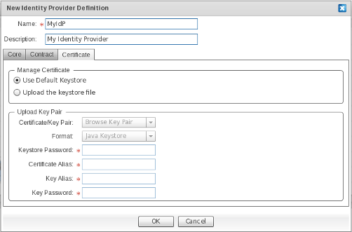
Field Descriptions
|
Field |
Description |
|
Use Default Keystore |
Use a built-in JKS-compliant keystore. Choosing to use the default keystore is only recommended for sandbox settings, where security is not really an issue. Within a production system, using a custom keystore is strongly recommended. |
|
Upload the keystore file |
Use custom keystore file. |
|
Certificate Key Pair |
Select this if you'd like to upload a keystore file from the local file system. |
|
Format |
The format of the keystore file. The only supported keystore format is Java Keystore. |
|
Keystore Password |
The password that the IdP will use to decrypt the supplied keystore, in order to access the key pair entries stored within. |
|
Certificate Alias |
The identifier of the keystore entry for the IdP's public key. |
|
Key Alias |
(TBD: check this with GB - same as above) The identifier of the keystore entry for the IdP's private key. |
|
Key Password |
The password required to obtain the keystore entry which holds the Identity Provider's private key. |
Click on OK to confirm IdP element creation.
Click on Cancel to abort IdP element creation.
In order to use the Identity Vault as the identity store for an IdP, an identity vault element needs to be defined for the identity appliance. See ??? to learn more on how to set up an Identity Vault.
Once an IdP and Identity Vault elements have been defined for the current Identity Appliance, use the Identity Lookup connection to connect them both.
From the Palette, click "Identity Lookup" in the "Connections" drawer.
Click on the source IdP element and drag the edge to the target Identity Vault element.
An edge should appear connecting the IdP and Identity Vault elements.
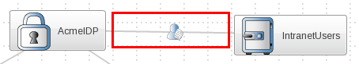
In order to use an LDAP Directory as the identity store for an IdP, an LDAP Identity Source element needs to be defined for the identity appliance. See ??? to learn more on how to set up an LDAP Identity Source.
Once an IdP and LDAP Identity Source elements have been defined for the current Identity Appliance, use the Identity Lookup connection to connect them both.
From the Palette, click "Identity Lookup" (TBD: insert image) in the "Connections" drawer.
Click on the source IdP element and drag the edge to the target LDAP Identity Source element.
An edge should appear connecting the IdP and LDAP identity source elements.

In order to use a Relational Database as the identity store for an IdP, an RDBMS Identity Source element needs to be defined for the identity appliance. See Section 6.3, “Set Up an RDBMS Identity Source” to learn more on how to set up an RDBMS Identity Source.
Once an IdP and RDBMS Identity Source elements have been defined for the current Identity Appliance, use the Identity Lookup connection to connect them both.
From the Palette, click "Identity Lookup" in the "Connections" drawer.
Click on the source IdP element and drag the edge to the target DB Identity Source element.
An edge should appear connecting the IdP and DB identity source elements.

In order to use XML documents as the identity store for an IdP, an XML Identity Source element needs to be defined for the identity appliance. See ??? to learn more on how to set up an XML Identity Source.
Once an IdP and XML Identity Source elements have been defined for the current Identity Appliance, use the Identity Lookup connection to connect them both.
From the Palette, click "Identity Lookup" in the "Connections" drawer.
Click on the source IdP element and drag the edge to the target XML Identity Source element.
An edge should appear connecting the IdP and XML identity source elements.

- 8.1. Set Up the Identity Source of the Service Provider
- 8.1.1. Using an Identity Vault as the Authoritative Source for the Service Provider
- 8.1.2. Using an LDAP Directory as the Authoritative Source for the Service Provider
- 8.1.3. Using an RDBMS as the Authoritative Source for the Service Provider
- 8.1.4. Using XML files as the Authoritative Source for the Service Provider
- 8.2. Set Up the Execution Environment of the Service Provider
- 8.2.1. Using an Alfresco Execution Environment
- 8.2.2. Using an Apache Web Server Execution Environment
- 8.2.3. Using a JavaEE Execution Environment
- 8.2.4. Using a JBoss Portal Execution Environment
- 8.2.5. Using a Liferay Portal Execution Environment
- 8.2.6. Using a phpBB Execution Environment
- 8.2.7. Using a Webserver Execution Environment
- 8.2.8. Using an Oracle Weblogic Execution Environment
- 8.2.9. Using a Websphere Community Edition (WASCE) Execution Environment
- 8.2.10. Using a Windows IIS Execution Environment
- 8.2.11. Using an Apache Tomcat Execution Environment
- 8.2.12. Using a JBoss Execution Environment
Once an IdP has been defined as the identity source that will be used to back authentication processes, the next step is to define the trusted partner sites that will consume the claims made by the IdP on behalf of any given user.
Service Providers will build on this claim set to authorize service requests made by end users and applications.
From the Palette, click "Service Provider" in the "Entities" drawer.
Drag the "Service Provider" element to the preferred location within the Diagram Canvas.
In the "New Service Provider Definition" window, enter the name of the Service Provider (SP).
On the "Core" screen, specify how consumers will reach the endpoints of the SP. The default location is built using attributes supplied at identity appliance-creation time. For the sake of consistency, we strongly suggest leaving the attributes as-is.
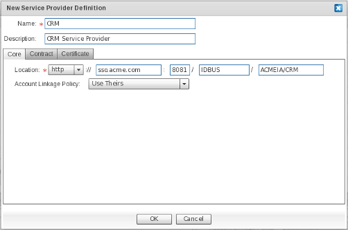
Field Descriptions
|
Field |
Description |
|
Name |
The unique identifier of the SP. |
|
Description |
A descriptive text for the SP. |
|
Location |
The access protocol - whether http or https - host name, port and context path where the endpoints for the SP will be bound. Clients will refer to services provided by the SP using URIs which are qualified using this location value. We strongly suggest that you use a fully qualified host name, so that the identity appliance services are decoupled from a specific physical host. |
|
Account Linkage Policy |
The means by which input claims, conveyed in the security token, which are issued and submitted by a trusted IdP, will be mapped to output claims; which will in turn be consumed by the relevant party in order to authorize users and grant them appropriate access. Select "Use Theirs" to link IdP and SP accounts using the supplied name identifier, and to map input to output claims in a one-to-one fashion. Select "Use Ours" to link IdP and SP accounts using the supplied name identifier, and to issue output claims based only on the user details that are available within the identity source connected with the SP. Select "Aggregate" to link IdP and SP accounts using the supplied name identifier, and to issue output claims based on merging both the user details conveyed in the security token and those obtained from the identity source connected to the SP. |
On the Contract screen, specify the IdP-facing SAML Profiles and Bindings to enable. You can also check on the level of security of the artifacts involved in message exchanges between SPs and the IdP.
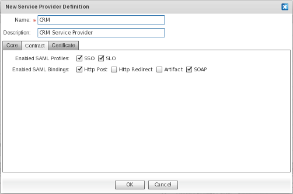
Field Descriptions
|
Field |
Description |
|
Enabled SAML Profiles |
The SAML Profile to activate for this IdP. These mainly represent the usage scenarios realized by the SP. The most important SAML profile is the "Web Browser Single Sign-On Profile", which can be enabled by selecting the SSO checkbox. Select the SLO checkbox to enable Single Logout Support. |
|
Enabled SAML Bindings |
The SAML bindings to be enabled for the selected SAML profiles. These specify the mapping of a SAML protocol message onto standard messaging formats and/or communications protocols. Select the Http Post checkbox to convey SAML messages through HTTP Post. Select the Http Redirect checkbox to convey SAML messages through HTTP Get. Select the Artifact checkbox to convey SAML messages through the SAML Artifact Binding, which builds on both HTTP Redirect and SOAP bindings to exchange SAML messages. Select the SOAP checkbox to convey SAML messages through SOAP over HTTP(s). |
On the Certificate screen, select the keystores which hold the private and public key pairs to secure SAML message exchanges between SPs and the IdP.
This involves setting up the building blocks of the trust system, which is based on public key infrastructure (PKI). The trust system provides peer authentication, integrity, confidentiality and non-repudiation in a transport-agnostic fashion. The SAML standard - which JOSSO supports - builds on PKI to guarantee these security attributes for SSO message exchanges. The requested information is mainly used for providers to access private and public key pairs.
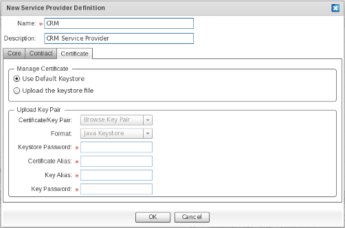
Field Descriptions
|
Field |
Description |
|
Use Default Keystore |
Use the built-in keystore portion of the distribution. We recommended this for sandbox settings only, where security is not really an issue. Within a production system, using a custom keystore is strongly recommended. |
|
Upload the keystore file |
Select this option if you wish to use a custom keystore. |
|
Certificate/Key Pair |
Allows you to select the desired keystore file from the local filesystem. |
|
Format |
The Keystore Format for the uploaded keystore file. Choose "Java Keystore" which is currently the only supported keystore format. It is expected that the PKCS#12 will be supported in future releases. |
|
Keystore Password |
Password that providers will use to open the keystore, to obtain the private and public certificate pairs that are required to secure SSO exchanges. |
|
Certificate Alias |
Identifier of the keystore entry for the public key. The public key is used, for instance, to validate the digital signature conveyed in SAML messages, to identify the requester and the integrity of the messages. |
|
Key Alias |
Name of the keystore entry used to obtain the corresponding private key. The private key is used, for instance, to digitally sign SAML messages. |
|
Key Password |
The password required to obtain the private key. |
Click on OK to confirm SP element creation.
Click on Cancel to abort SP element creation.
An SP may build on an identity source in order to link the IdP account with a local counterpart, and employ the user details available in the IdP account to augment output claims. TBD: Can a service provider operate without an associated identity source ?
To define a local identity source for an SP, drag one of the available identity sources and connect it to the target SP, using the "identity lookup" edge.
In order to build the SP on the information provided by the built-in identity store, define an Identity Vault element and associate it with the IdP.
From the Palette, click "Identity Vault" in the "Identity Sources" drawer.
Click on and drag the "Identity Vault" element to the preferred location within the Diagram Canvas.
For more information regarding the setup of identity vaults, please refer to section TBD: point to section for setting up an identity vault. ???
In order to use an identity vault as the identity store for an IdP, establish an "identity lookup" connection between them both.
From the Palette, click "Identity Lookup" on the "Connections" drawer.
Click on the source SP element, and drag the edge to the target identity vault element.
An edge should appear, connecting the SP and identity vault elements.
In order to build the SP using the information provided by an LDAP directory, first define an LDAP Identity Source element and then associate it with the IdP.
From the Palette, click "Ldap Identity Source" in the "Identity Sources" drawer.
Click on and drag the "Ldap Identity Source" element to the preferred location within the Diagram Canvas.
For more information regarding the setup of LDAP identity sources, please refer to section TBD: point to section for setting up an ldap directory???.
To employ an LDAP Directory as the identity store for an IdP, establish an identity lookup connection between both.
From the Palette, click "Identity Lookup" on the "Connections" drawer.
Click on the source SP element and drag the edge to the target LDAP Identity Source element.
An edge should appear, connecting the SP and LDAP identity source elements.
In order to build the SP on the information provided by an RDBMS-based identity source, you must define an RBMS Identity Source element and associate it with the SP.
From the Palette, click "RDBMS Identity Source" in the "Identity Sources" drawer.
Click on and drag the "RDBMS Identity Source" element to the preferred location within the Diagram Canvas.
For more information regarding the setup of RDBMS identity sources please refer to section TBD: point to section for setting up an RBMS source???.
In order to use an RDBMS source as the identity store for an SP, you must establish an Identity Lookup connection between both.
From the Palette, click "Identity Lookup" in the "Connections" drawer.
Click on the source SP element, and drag the edge to the target XML Identity Source element.
An edge should appear, connecting the SP and RDBMS identity source elements.
In order to build the SP on the information provided by an XML-based identity source, you must define an XML Identity Source element and associate it with the SP.
From the Palette, click "XML Identity Source" in the "Identity Sources" drawer.
Click on and drag the "XML Identity Source" element to the preferred location within the Diagram Canvas.
For more information regarding the setup of XML identity sources, please refer to section TBD: point to section for setting up an XML source???.
In order to use an XML source as the identity store for an IdP, you must establish an Identity Lookup connection between them.
From the Palette, click "Identity Lookup" in the "Connections" drawer.
Click on the source SP element, and drag the edge to the target XML Identity Source element.
An edge should appear, connecting the SP and XML identity source elements.
One or more SPs can be hosted applications or resources within an Apache Web Server instance.
Alfresco offers true Open Source Enterprise Content Management (ECM): Document Management, Collaboration, Records Management, Knowledge Management, Web Content Management and Imaging.
In order to build the SP on the Alfresco execution environment, you must define an Alfresco Execution Environment element, and associate it with the SP.
From the Palette, click "Alfresco" in the "Execution Environments" drawer.
Click on and drag the "Alfresco" element to the preferred location within the Diagram Canvas.
Within the setup dialog, enter the Alfresco CMS execution environment details :
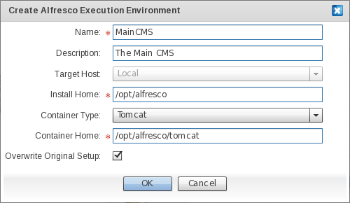
Field Descriptions
|
Field |
Description |
|
Name |
The unique identifier for the execution environment. |
|
Description |
A descriptive text for the execution environment. |
|
Target Host |
The host where the Alfresco CMS instance is located. The only available option is "Local". Therefore, in order for the activation to be successful, the execution environment has to be provisioned within the same host as the JOSSO2 instance. Alternatively, in cases where the execution environment is on a host other than JOSSO2, the install home folder of the execution environment should be accessible from this. (TBD: ask GB about this sentence) |
|
Install Home |
The folder hosting the artifacts of the Alfresco CMS server instance. |
|
Container Type |
The web container flavour on top of which the Alfresco CMS server is deployed. |
|
Container Home |
The folder hosting the web container on top of which the Alfresco CMS server runs. |
|
Overwrite Original Setup |
Check in cases where the execution environment has been previously activated, either from the JOSSO1 command line console or through the Atricore Console, and you wish to replace the original settings with new ones. |
In order to use an XML source as the identity store for an IdP, you must establish an Identity Lookup connection between them both.
From the Palette, click "Identity Lookup" in the "Connections" drawer.
Click on the source SP element, and drag the edge to the target XML Identity Source element.
An edge should appear, connecting the SP and XML identity source elements.
The Apache HTTP Server is a popular open source, standard, secure, efficient and extensible HTTP server for modern operating systems, including UNIX and Windows NT.
An Apache HTTP Server can run virtually all types of web applications, such as those written in PHP, Perl, Ruby and Python among many others.
The figure for representing a Apache Web Server Execution Environment is the following : TODO: insert Apache Web Server Execution Environment Figure
Establishing an activation connection between an SP and an Apache Web Server Execution Environment implies that the SP is a web application, hosted by an Apache Web Server instance.
There is no support for automatic activation upon an Apache Web Server execution environment that is connected with an SP.
Applications running under Apache Web Server can be SSO-enabled seamlessly, without having to couple the application to the underlying SSO infrastructure, and deal with SSO internals.
Once a successful security context is established, the web application - playing the service provider role - can consume it by relying on the REMOTE_USER environment variable set as the JOSSO Agent for Apache Web Server.
This variable contains the user name of the authenticated user. The REMOTE_USER value can be used to search for the user details as well as any other business-specific user profile information.
TBD: completeJava Platform, Enterprise Edition or Java EE is a widely used platform for server programming in the Java programming language. The Java platform (Enterprise Edition) differs from the Java Standard Edition Platform (Java SE) in that it adds libraries which provide functionality to deploy fault-tolerant, distributed, multi-tier Java software, based largely on modular components running on an application server.
In order to build the SP on a JavaEE execution environment, define a JavaEE Execution Environment element and associate it with the SP.
From the Palette, click "JavaEE" in the "Execution Environments" drawer.
Click on and drag the "JavaEE" element to the preferred location within the Diagram Canvas.
Within the setup dialog, enter the JavaEE execution environment details :
TBD: Complete
JBoss Portal provides an open source and standards-based environment for hosting and serving a portal's Web interface, publishing and managing its content, and customizing its experience. It is entirely standards-based and supports the JSR-168 portlet specification, which allows you to easily plug in standards-compliant portlets to meet your specific portal needs.
In order to build the SP on the JBoss Portal execution environment, define a JBoss Portal Execution Environment element and associate it with the SP.
From the Palette, click "JBoss Portal" in the "Execution Environments" drawer.
Click on and drag the "JBoss Portal" element to the preferred location within the Diagram Canvas.
Within the setup dialog, enter the JBoss Portal execution environment details :
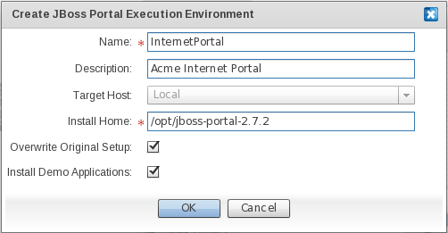
Field Descriptions
|
Field |
Description |
|
Name |
The unique identifier for the execution environment. |
|
Description |
A descriptive text for the execution environment. |
|
Target Host |
The host where the JBoss Portal instance is located. The only available option is "Local"; Therefore, in order for the activation to be successful, the execution environment has to be provisioned within the same host as the JOSSO2 instance. Alternatively, in cases where the execution environment is on a different host than JOSSO2, the install home folder of the execution environment should be accessible from this. |
|
Install Home |
The folder hosting the artifacts of the JBoss Portal server instance. |
|
Overwrite Original Setup |
Check in cases where the execution environment has been previously activated - either from the JOSSO1 command line console or through the Atricore Console - and you wish to have the original settings replaced with new ones. |
|
Install Demo Applications |
TBD: Shouldn't be installing demo portlets ? Check, if deploying JOSSO example web applications onto the target execution environment. We strongly recommended that you check this field in order to verify that the Internet SSO setting works as expected, before engaging in SSO-enabling candiate business applications. |
Liferay Portal is an enterprise open source portal framework, offering integrated Web publishing and content management, an enterprise service bus and service-oriented architecture, and compatibility with all major IT infrastructure.
In order to build the SP on the Liferay Portal execution environment, you must define a Liferay Portal Execution Environment element, and associate it with the SP.
From the Palette, click "Liferay Portal" in the "Execution Environments" drawer.
Click on and drag the "Liferay Portal" element to the preferred location within the Diagram Canvas.
Within the setup dialog enter the Liferay Portal execution environment details :
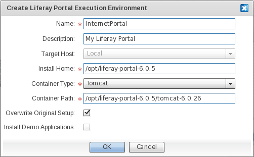
Field Descriptions
|
Field |
Description |
|
Name |
The unique identifier for the execution environment. |
|
Description |
A descriptive text for the execution environment. |
|
Target Host |
The host where the Liferay Portal instance is located. The only available option is "Local"; Therefore, in order for the activation to be successful, the execution environment has to be provisioned within the same host as the JOSSO2 instance. Alternatively, if the execution environment is on a different host than JOSSO2, the install home folder of the execution environment should be accessible from this. |
|
Install Home |
The folder hosting the artifacts of the Liferay Portal server instance. |
|
Container Type |
The web container flavour on top of which the Liferay Portal server is deployed. |
|
TBD: App needs to show "Container Home" not "Container Path" Container Home |
The folder hosting the web container on top of which Liferay Portal server runs. |
|
Overwrite Original Setup |
Check, if the execution environment has been previously activated - either from the JOSSO1 command line console or through the Atricore Console - and you wish to have the original settings replaced with new ones. |
|
Install Demo Applications |
TBD: Shouldn't be installing demo portlets ? Check for deploying JOSSO example web applications onto the target execution environment. We strongly recommend that you check this field in order to verify that the Internet SSO setting works as expected, before engaging in SSO-enabling candidate business applications. |
phpBB is a free flat-forum bulletin board software solution that can be used to stay in touch with a group of people, or can power your entire website.
In order to build the SP on the phpBB Portal execution environment, you must define a phpBB Execution Environment element, and associate it with the SP.
From the Palette, click "phpBB" in the "Execution Environments" drawer.
Click on and drag the "PhpBB" element to the preferred location within the Diagram Canvas.
Within the setup dialog enter the phpBB execution environment details :
TBD: complete
A web server execution environment represents a generic web server (or container) hosting web applications or resources. Activation is not supported for this environment.
In order to build the SP on a Web server execution environment, you must define a Web Server Execution Environment element, and associate it with the SP.
From the Palette, click "Web Server" in the "Execution Environments" drawer.
Click on and drag the "Web Server" element to the preferred location within the Diagram Canvas.
Within the setup dialog, enter the Web Server execution environment details :
TBD: complete
WebLogic Server is a J2EE-compliant application server, produced by Oracle. It implements the full range of J2EE technologies, and provides features such as advanced management, clustering, and web services. It forms the core of the WebLogic platform, and provides a framework for building scalable, highly available and secure applications.
JOSSO supports SSO-enabling JavaEE applications running under Oracle WebLogic Server 9 and 10. Both web and business layers can be SSO-enabled. For instance, within a 3 or n-tier setting, once the security context is established on the web tier, JOSSO will seamlessly propagate it to the potentially distributed business tier. A business tier realized using Enterprise Java Beans (EJB) - namely Session Beans - will then be able to leverage the security context by applying the EJB-specific access control rules in both declarative - through Java annotations - and programmatic form.
The figure used to represent a WebLogic Server Execution Environment is the following : TODO: insert WebLogic Server Execution Environment Figure
Establishing an activation connection between an SP and a WebLogic Execution Environment implies that the SP is a standard JavaEE application hosted by a WebLogic Server instance.
Launching the activation on an WebLogic Server execution environment triggers the provisioning of the specific SSO Agent for the target WebLogic Server instance.
Once a successful security context is established, the web application - playing the service provider role - can consume it by relying on the security methods of the standard Servlet APIs.
The getUserPrincipal method can be used to return the javax.security.Principal object that contains the SSO user principal. The outcome of this method can be casted to the JOSSOUser class for the specific release of the Apache Tomcat Agent, allowing you to access SSO-specific properties, such as all the asserted claims for the user.
The isUserInRole allows you to assert if the remote user is granted the specified security role. Through this operation, it's possible to perform Role-based Access Control based on the supplied entitlement claims.
Within a business tier realized as Enterprise Java Beans, two approaches can be used for authorizing the caller: Declarative and Programmatic Authorization. With the declarative approach, access roles are defined in either the EJB descriptor or directly in the EJB class, using Java annotations. With the programmatic approach , the EJBContext.isCallerInRole method can be used to perform finer-grained access control. Both declarative and programmatic authorization can be used, building on the security context established by JOSSO.
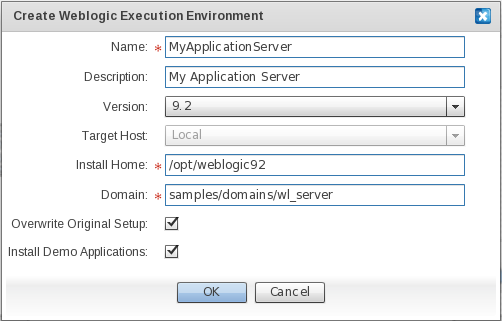
Field Descriptions
|
Field |
Description |
|
Name |
The unique identifier for the execution environment. |
|
Description |
A descriptive text for the execution environment. |
|
Version |
The Oracle Weblogic application server family. Select "9.2" to define an execution environment element based on the Oracle Weblogic 9.2 family. Select "10" to define an execution environment element based on the Oracle Weblogic 10 family. |
|
Target Host |
The host where the Oracle Weblogic instance is located. The only available option is "Local". Therefore, in order for the activation to be successful, the execution environment has to be provisioned within the same host as the JOSSO2 instance. Alternatively, in case the execution environment is on a different host than JOSSO2, the install home folder of the execution environment should be accessible from this. |
|
Install Home |
The folder which hosts the artifacts of the Oracle Weblogic execution environment. The value for this field should correspond to that of the WL_HOME environment variable. |
|
Overwrite Original Setup |
Check in case the execution environment has been previously activated - either from the JOSSO1 command line console or through the Atricore Console - and you wish to have the original settings replaced with new ones. |
|
Install Demo Applications |
Check, if you wish to deploy JOSSO example web applications onto the target execution environment. It is strongly recommended that you check this field, in order to verify that the Internet SSO setting works as expected, before engaging in SSO-enabling candidate business applications. |
The Websphere Community Edition - also known as WASCE - is an open source application server developed by the Apache Software Foundation and distributed under the Apache license. It is the free edition of IBM WebSphere application server and is based on Geronimo.
JOSSO supports SSO-enabling JavaEE applications running under WASCE 2.1 . Both web and business layers can be SSO-enabled. For instance, within a 3 or n-tier setting, once the security context is established on the web tier, JOSSO will seamlessly propagate it to the potentially distributed business tier. A business tier realized using Enterprise Java Beans (EJB) - namely Session Beans - will then be able to leverage the security context by applying the EJB-specific access control rules in both declarative - through Java annotations - and programmatic form.
The figure used to represent a Websphere Execution Environment: TODO: insert Websphere Community Edition Execution Environment Figure
Establishing an activation connection between an SP and a Websphere Community Edition Execution Environment implies that the SP is a standard JavaEE application, hosted by a Websphere Community Edition Server instance.
Launching the activation on an Websphere Community Edition execution environment triggers the provisioning of the specific SSO Agent for the target instance.
Once a successful security context is established, the web application - playing the service provider role - can consume it by relying on the security methods of the standard Servlet APIs.
The getUserPrincipal method can be used to return a javax.security.Principal object, that contains the SSO user principal. The outcome of this method can be casted to the JOSSOUser class for the specific release of the Apache Tomcat Agent, allowing you to access SSO-specific properties, such as all the asserted claims for the user.
The isUserInRole allows you to assert if the remote user is granted a specified security role. Through this operation, it's possible to perform Role-based Access Control based on the supplied entitlement claims.
Within a business tier realized as Enterprise Java Beans, two approaches can be used for authorizing the caller : Declarative and Programmatic Authorization. In the declarative approach, access roles are defined in either the EJB descriptor or directly in the EJB class using Java annotations. In the programmatic approach, the EJBContext.isCallerInRole method can be used to perform finer-grained access control. Both declarative and programmatic authorization can be used, building on the security context established by JOSSO.
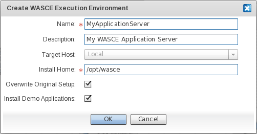
Field Descriptions
|
Field |
Description |
|
Name |
The unique identifier for the execution environment. |
|
Description |
A descriptive text for the execution environment. |
|
Target Host |
The host where the Websphere Community Edition server instance is located. The only available option is "Local". Therefore, in order for the activation to be successful, the execution environment has to be provisioned within the same host as the JOSSO2 instance. Alternatively, in cases where the execution environment is on a different host than JOSSO2, the install home folder of the execution environment should be accessible from this. |
|
Install Home |
The folder hosting the artifacts of the Websphere Community Edition execution environment. The value for this field should correspond to the one of the WASCE_HOME environment variable. |
|
Overwrite Original Setup |
Check, in cases where the execution environment has been previously activated - either from the JOSSO1 command line console or through the Atricore Console - and you wish to have the original settings replaced with new ones. |
|
Install Demo Applications |
Check, to deploy JOSSO example web applications onto the target execution environment. It is strongly recommended to check this field, in order to verify that the Internet SSO setting works as expected, before engaging in SSO-enabling candidate business applications. |
Internet Information Services (IIS) – formerly called Internet Information Server – is a web server application and set of feature extension modules, created by Microsoft, for use with Microsoft Windows.
In order to build the SP on a Windows IIS execution environment, you must define a Windows IIS Execution Environment element, and associate it with the SP.
From the Palette, click "Windows IIS" in the "Execution Environments" drawer.
Click on and drag the "Windows IIS" element to the preferred location within the Diagram Canvas.
Within the setup dialog, enter the Windows IIS execution environment details :
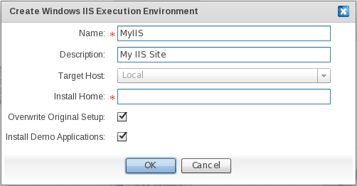
Field Descriptions
|
Field |
Description |
|
Name |
The unique identifier for the execution environment. |
|
Description |
A descriptive text for the execution environment. |
|
Target Host |
The host where the Windows IIS server instance is located. The only available option is "Local". Therefore, in order for the activation to be successful, the execution environment has to be provisioned within the same host as the JOSSO2 instance. Alternatively, in cases where the execution environment is on a different host than JOSSO2, the install home folder of the execution environment should be accessible from this. |
|
Install Home |
The folder hosting the Windows IIS installation. |
|
Overwrite Original Setup |
Check, in case the execution environment has been previously activated - either from the JOSSO1 command line console or through the Atricore Console - and you wish to have the original settings replaced with new ones. |
|
Install Demo Applications |
Check to deploy JOSSO example web applications onto the target execution environment. It is strongly recommended to check this field, in order to verify that the Internet SSO setting works as expected, before engaging in SSO-enabling candiate business applications. |
Apache Tomcat (or Jakarta Tomcat or simply Tomcat) is an open source servlet container developed by the Apache Software Foundation (ASF). Tomcat implements the Java Servlet and the JavaServer Pages (JSP) specifications from Sun Microsystems, and provides a "pure Java" HTTP web server environment for Java code to run.
JOSSO supports SSO-enabling JavaEE web applications running under Apache Tomcat 5.0, 5.5 and 6.0 .
The figure for representing an Apache Tomcat Execution Environment is the following : TODO: insert Apache Tomcat Execution Environment Figure
Establishing an activation connection between an SP and a Tomcat Execution Environment implies that the SP is a standard Java Web Application, hosted by an Apache Tomcat container.
Launching the activation on an Apache Tomcat Execution Environment triggers the provisioning of the SSO Agent for this web container.
Once a successful security context is established, the web application - playing the SP role - can consume it by relying on the security methods of the standard Servlet APIs.
The getUserPrincipal method can be used to return a javax.security.Principal object that contains the SSO user principal. The outcome of this method can be casted to the JOSSO User class pertaining to the specific release of the Apache Tomcat Agent, allowing you to access SSO-specific properties, such as all the asserted claims for the user.
The isUserInRole allows you to assert if the remote user is granted the specified security role. Through this operation it's possible to perform Role-based Access Control based on the supplied entitlement claims.
Field Descriptions
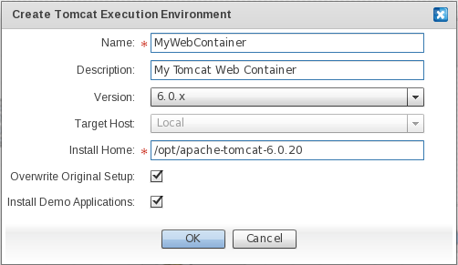
|
Field |
Description |
|
Name |
The unique identifier for the execution environment. |
|
Description |
A descriptive text for the execution environment. |
|
Version |
The Apache Tomcat web container family. Select "5.0.x" to define an execution environment element based on the Apache Tomcat 5 family. Select "5.5.x" to define an execution environment element based on the Apache Tomcat 5.5 family. Select "6.0.x" to define an execution environment element based on the Apache Tomcat 6 family. |
|
Target Host |
The host where the Apache Tomcat web container instance is located. The only available option is "Local". Therefore, in order for the activation to be successful, the execution environment has to be provisioned within the same host as the JOSSO2 instance. Alternatively, in case the execution environment is on a different host than JOSSO2, the install home folder of the execution environment should be accessible from this. |
|
Install Home |
The folder hosting the artifacts of the Apache Tomcat execution environment. The value for this field should correspond to that of the CATALINA_HOME environment variable. |
|
Overwrite Original Setup |
Check in case the execution environment has been previously activated - either from the JOSSO1 command line console or through the Atricore Console - and you wish to have the original settings replaced with new ones. |
|
Install Demo Applications |
Check to deploy JOSSO example web applications onto the target execution environment. It is strongly recommended to check this field, in order to verify that the Internet SSO setting works as expected, before engaging in SSO-enabling candidate business applications. |
JBoss is a Java EE certified platform for developing and deploying enterprise Java applications, Web applications, and Portals. JBoss Application Server provides the full range of Java EE 5 features, as well as extended enterprise services including clustering, caching, and persistence.
The Web Server component of the JBoss Application Server is the JBoss Web Server. The JBoss Web Server is an enterprise-ready web server designed for medium and large applications, based on Apache Tomcat, providing a single deployment platform for Java Server Pages (JSP) and Java Servlet technologies, PHP, and CGI.
JOSSO supports SSO-enabling JavaEE applications running under JBoss 3.2, 4.0, 4.2 and 5.0 . Both web and business layers can be SSO-enabled. For instance, within a 3 or n-tier setting, once the security context is established on the web tier, JOSSO will seamlessly propagate it to the potentially distributed business tier. A business tier realized using Enterprise Java Beans (EJB) - namely Session Beans - will then be able to leverage the security context by applying the EJB-specific access control rules in both declarative - through Java annotations - and programmatic form.
The figure for representing an Apache Tomcat Execution Environment is the following : TODO: insert Apache Tomcat Execution Environment Figure
Establishing an activation connection between an SP and a JBoss Execution Environment implies that the SP is a standard JavaEE application hosted by a JBoss Application Server.
Launching the activation on an Apache Tomcat Execution Environment triggers the provisioning of the specific SSO Agent for the target JBoss Application Server instance.
Once a successful security context is established, the web application - playing the service provider role - can consume it by relying on the security methods of the standard Servlet APIs.
The getUserPrincipal method can be used to returnthe javax.security.Principal object that contains the SSO user principal. The outcome of this method can be casted to the JOSSOUser class for the specific release of the Apache Tomcat Agent, allowing you to access SSO-specific properties, such as all the asserted claims for the user.
The isUserInRole allows you to assert if the remote user is granted the specified security role. Therefore, through this operation it's possible to perform Role-based Access Control based on the supplied entitlement claims.
Within a business tier realized as Enteprise Java Beans, two approaches can be used for authorizing the caller: Declarative and Programmatic Authorization. In the declarative approach access roles are defined in either the EJB descriptor or directly in the EJB class using Java annotations. In the programmatic approach , the EJBContext.isCallerInRole method can be used to perform finer-grained access control. Both declarative and programmatic authorization can be used, building on the security context established by JOSSO.
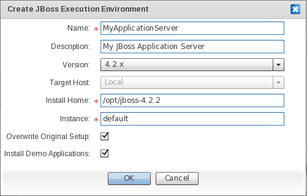
Field Descriptions
|
Field |
Description |
|
Name |
The unique identifier for the execution environment. |
|
Description |
A descriptive text for the execution environment. |
|
Version |
The Redhat JBoss application server family. Select "3.2.6" to define an execution environment element based on the Redhat JBoss 3.2.6 family. Select "4.0.x" to define an execution environment element based on the Redhat JBoss 4.0 family. Select "4.2.x" to define an execution environment element based on the Redhat JBoss 4.2 family. Select "5.x" to define an execution environment element based on the Redhat JBoss 5 family. |
|
Target Host |
The host where the Redhat JBoss application server instance is located. The only available option is "Local". Therefore, in order for the activation to be successful, the execution environment has to be provisioned within the same host as the JOSSO2 instance. Alternatively, in case the execution environment is on a different host than JOSSO2, the install home folder of the execution environment should be accessible from this. |
|
Install Home |
The folder hosting the artifacts of the Redhat JBoss application server instance. The value for this field should correspond to that of the JBOSS_HOME environment variable. |
|
Overwrite Original Setup |
Check in case the execution environment has been previously activated - either from the JOSSO1 command line console or through the Atricore Console - and you wish to have the original settings replaced with new ones. |
|
Install Demo Applications |
Check to deploy JOSSO example web applications onto the target execution environment. It is strongly recommended that you check this field, in order to verify that the Internet SSO setting works as expected, before engaging in SSO-enabling candidate business applications. |
A Circle of Trust is a group of Service Providers that share linked identities and have pertinent business agreements in place regarding how to do business and interact with identities.
The first and most obvious way in which trust is established, is through existing relationships with partners, vendors and customers. If your organization already has agreements in place with another organization and you have a history of working together, they're already part of your circle.
Having put together the building blocks of an Identity Appliance defining at least one Identity Provider (IdP) and a set of Service Providers, the next step is to enable a seamless SSO experience for users to leverage when consuming the business services provided by the Service Provider (SP).
This is accomplished by creating a relationship of trust between IdPs and SPs, who agree to honor one another's authentication and authorization information.
To connect IdP and SP elements in order to create a relationship of trust, use the "Federated Connection" edge available in the "Connections" palette drawer.
Click on the "Federation Connection" element. Select the SP and drag the edge onto the target IdP.
The following dialog will appear for defining the characteristics of the federation connection between the chosen entities.
On the Contract screen, specify the SAML Profiles and Bindings to be enabled, as well as the level of security of the artifacts involved in message exchanges between SPs and the IdP.
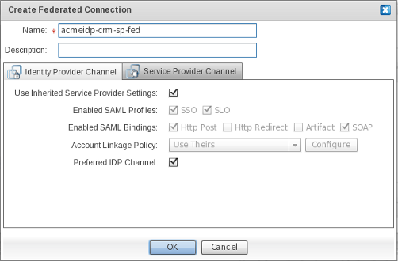
Field Descriptions
|
Field |
Description |
|
Name |
The unique identifier of the Federated SSO connection. |
|
Description |
A descriptive text for the Federated SSO connection. |
In the "Identity Provider Channel" section, define the SP's contract, specific to the IdP end of the Federated SSO connection. IdP Channel properties specified within this section will override the default contract established by the SP toward trusted IdPs.
Field Descriptions
|
Field |
Description |
|
Use Inherited Service Provider Settings |
Select this checkbox if you wish to override the default contract established by the SP toward the IdP. |
|
Enabled SAML Profiles |
The SAML Profile to activate in the SP for the IdPs. These mainly represent usage scenarios which arerealized by the SP for this specific IdP. The most important SAML profile is the "Web Browser Single Sign-On Profile", which can be enabled by selecting the SSO checkbox. Select the SLO checkbox to enable Single Logout Support. |
|
Enabled SAML Bindings |
Enable SAML bindings for selected SAML profiles. This action specifies the mapping of a SAML protocol message onto standard messaging formats and/or communications protocols. Select the Http Post checkbox to convey SAML messages through HTTP Post. Select the Http Redirect checkbox to convey SAML messages through HTTP Get. Select <the></the> Artifact checkbox to convey SAML messages through the SAML Artifact Binding, which builds on both HTTP Redirect and SOAP bindings to exchange SAML messages. Select the SOAP checkbox to convey SAML messages through SOAP over HTTP(s). |
|
Account Linkage Policy |
(TBD: there is a configure button which is not bound to any action at all. Remove or realize it's behavior) The means by which input claims conveyed in the security token, which are issued and submitted by the IdP's end of the Federated SSO connection, are mapped to output claims; which will in turn be consumed by the relevant party in order to authorize users and grant appropriate access. Select "Use Theirs" to link IdP and SP accounts using the supplied name identifier, and mapping input to output claims in a one-to-one fashion. Select "Use Ours" to link IdP and SP accounts using the supplied name identifier, and to issue output claims based only on the user details that are available within the identity source that is connected to the SP. Select "Aggregate" to link IdP and SP accounts using the supplied name identifier, and to issue output claims based on merging both the user details conveyed in the security token and those obtained from the identity source connected to the SP. |
|
Preferred IdP Channel |
Select this checkbox to select the IdP of this connection as the SP's default authority for identification of a user when a protected resource is requested. More specifically, this is the IdP to which the user will be redirected in an SP-initiated usage scenario. |
In the "Service Provider Channel" section, define the IdP's contract specific to the SP end of the Federated SSO connection. Service Provider Channel properties specified within this section override the default contract established by the IdP toward trusted SPs.
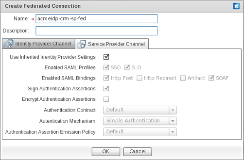
Field Descriptions
|
Field |
Description |
|
Use Inherited Identity Provider Settings |
Select this checkbox if you wish to override the default contract, established by the IdP end, toward trusted SPs. |
|
Enabled SAML Profiles |
The SAML Profile to activate in the IdP, for SPs. These profiles mainly represent usage scenarios which have been realized by the IdP for a specific SP. The most important SAML profile is the "Web Browser Single Sign-On Profile", which can be enabled by selecting the SSO checkbox. Select the SLO checkbox to enable Single Logout Support. |
|
Enabled SAML Bindings |
The SAML bindings to be enabled for your chosen SAML profiles. This specifies the mapping of a SAML protocol message onto standard messaging formats and/or communications protocols. Select the Http Post checkbox to convey SAML messages through HTTP Post. Select the Http Redirect checkbox to convey SAML messages through HTTP Get. Select <the></the> Artifact checkbox to convey SAML messages through the SAML Artifact Binding, which builds on both HTTP Redirect and SOAP bindings for exchanging SAML messages. Select the SOAP checkbox to convey SAML messages through SOAP over HTTP(s). |
|
Sign Authentication Assertions |
Determines whether SAML Authentication Assertions pushed to this SP will be digitally signed. Digitally signing SAML Authentication Assertions provides proof-of-identity of the IdP to Service Providers, as well as ensuring their integrity. |
|
Encrypt Authentication Assertions |
Determines whether SAML Authentication Assertions pushed to this SP will be encrypted. Encrypting SAML Authentication Assertions provides confidentiality to SAML messages, thus preventing eavesdropping. |
|
Authentication Contract |
The message contract for submitting input claims (such as user credentials) that have been made to this SP, to the Identity Provider. The default and only available contract builds on JOSSO-specific parameters which are submitted when simple web-based authentication is attempted. |
|
Authentication Mechanism |
The specific means by which the SP's connection end can authenticate users. The only supported authentication mechanism is Simple Authentication , which identifies users based on username and password. |
|
Authentication Assertion Emission Policy |
This enables you to customize how, upon succesful authentication, assertions are emitted for the SP's connection end. The emitted authentication assertions are conveyed in security tokens pushed to relying parties. |
The Identity Architect also controls the transformation of the identity architecture model into a fully executing artifact. As in the identity appliance modeler, this process is carried out in a point-and-click fashion.
The Identity Appliance Lifecycle Management screen offers a grid-based layout, within which tables represent the different states the identity appliance artifact can be in. Transitioning the identity appliance from one state to another state is achieved by dragging the identity appliance item from one table of the grid - representing the source state - and dropping it onto the table representing the target state.
Enabling an Identity Appliance Model to deliver the specified identity and access management services requires that you transform it to an executable artifact. Simply put, the executable artifact onto which an identity appliance is mapped is a set of JOSSO2 descriptors that are packaged as an OSGi bundle. JOSSO2 descriptors contribute identity and access management service definitions - such as SAML endpoints - to the underlying core.
In order to build an identity appliance, select the corresponding row for the target identity appliance within the "Saved" table of the lifecycle management grid.
The "Saved" table holds entries for the identity appliances that are candidates for compilation, and will ultimately be deployed and executed. Within this state, identity appliances can be edited and removed. To continue with the design process, click on the TBD:insert image button to open the identity appliance within the modeler view. To delete an identity appliance, click on the TBD: insert image button.
To build an identity appliance, select and drag the row for the target identity appliance item from the "Saved" table and drop it onto the "Staged" table of the grid. If the operation is successful, the target identity appliance will appear in the "Deployed" table of the lifecycle management grid.
Once an identity appliance has been transformed to an executable artifact it is still not available for execution, since the underlying execution environment is not aware of its existence. In order to execute an identity appliance you must first deploy it by installing the corresponding artifact onto the JOSSO2 execution environment.
The identity appliances candidates for deployment are shown in the "Staged" table of the lifecycle management grid.
The "Staged" table holds entries for the identity appliances that have been successfully compiled. Within this state, identity appliances can be viewed and rebuilt. To continue the design process, click on the TBD: insert image button to open the identity appliance within the modeler view. Then, click on the TBD:insert image button to rebuild the identity appliance (required in order to achieve visibility of the latest changes made in the editing session).
To deploy an identity appliance, select and drag the row for the target identity appliance item from the "Staged" table and drop it onto the "Deployed" table. The target identity appliance should appear in the "Deployed" table of the lifecycle management grid.
Once an identity appliance has been deployed - meaning that it is now hosted within the JOSSO2 execution environment - it is available for execution.
The "Deployed" table holds the entries for identity appliances which have been deployed and are candidates for execution. Within the deployed state, identity appliances can be either running or stopped. The "State" column shows the identity appliance's current state. Possible states include: "Deployed", "Started" or "Stopped". The deployed state, identified as "DEPLOYED" in the State column, represents identity appliances which have been deployed, but have not been started. The started state ("STARTED" in the State column) represents identity appliances which have been deployed and started. These identity appliance definitions are being realized through identity and access management services which are available to consumers. Finally, the stopped state ("STOPPED" in the State column) represents identity appliances that are no longer executing. Services corresponding to these identity appliance definitions are no longer up and running. Within the "Actions" columns three actions can be applied to the identity appliance: "Start","Stop" and "Undeploy".
Within the "Deployed" table of the lifecycle management grid, click on the TBD: insert image button in the Actions column. This starts the identity appliance, transitioning it to the "Started" state. The target identity appliance should display as "started" in the State column.
Identity Appliance undeployment can be carried out from the "Deployed" table of the lifecycle management grid. Click on the TBD: insert image button to undeploy an identity appliance, which will transition it to the staged state. The target Identity Appliance will be undeployed and transitioned to the "Staged" state, and should appear in the "Staged" table of the lifecycle management grid.
Identity Appliance disposal can be carried out from the "Staged" table of the lifecycle management grid. This can be accomplished in two distinct ways: 1) Click on the TBD: insert image button to dispose of an identity appliance, transitioning it to the "Disposed" state. 2) Select and drag the row for the target identity appliance item from the "Staged" table and drop it onto the "Disposed" table. The target Identity Appliance will be disposed and transitioned to the "Disposed" state, and should appear in the "Disposed" table of the lifecycle management grid.
An identity appliance that is no longer in use may be discarded and completely erased from the system. Once an identity appliance is removed, it cannot be recovered.
Disposal can be realized for appliances in either the "Saved" and "Disposed" states. The "Disposed" table holds the entries for the identity appliances that have been discarded, and are no longer available to be edited or executed. Identity Appliances within this states are candidates for definitive removal.
In order to dispose of an identity appliance in the "Disposed" table, select the row for the identity appliance and click on the TBD: insert image button within the state column. The disposed-of identity appliance should no longer show up within the state-specific tables of the lifecycle management grid.
In order to dispose of an identity appliance in the "Saved" table, select the row for the identity appliance and click on the TBD: insert image button within the state column. The disposed-of identity appliance should no longer show up within the state-specific tables of the lifecycle management grid.
Generally speaking, when you add users and groups using the administration console, you're adding that data to the database on top of which the identity vault is founded. By default, even if you use an external identity source such as an LDAP (Lightweight Directory Access Protocol) directory, the users you add through the console will be added to JOSSO's identity vault and not to the external identity source.
A user account represents a person using the application's members of a circle of trust. Each user account has associated attributes which make up the person's profile. The console can be used to change any user's name and password, and to view and/or edit their profile information. It's also possible to disable a user (if, for example, that user is no longer involved) but it's best to preserve their profile information.
A group collects user accounts, typically in order to make it easier to grant all of the collected users certain entitlements. For example, you might create a group of human resources workers so that you can give them (and only them) permission to view potentially sensitive information about employees in a "Benefits" space. As an Administrator, you can add users and groups, and assign users to groups in order to determine their permissions.
To reach the Account Management screen, go to the Main screen and click on Account and Entitlement Management.
User profile information is entered on the General User Information screen.
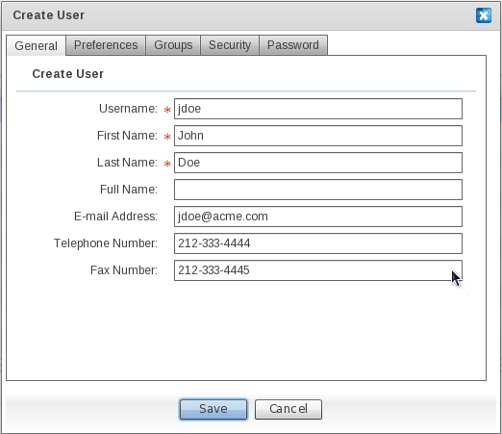
Field Descriptions
|
Field |
Description |
|
Username |
The unique identifier for the person used for authentication. An example of a username is "jdoe". |
|
First Name |
A given name is that part of a person's name which signifies the person's primary individual identity. Sometimes also called a "given name" or (in some countries) a "Christian name". An example of a first name is "John". |
|
Last Name |
A last name is that part of a person's name which signifies the person's primary family association. Sometimes also called a "family name" or "surname". An example of a last name is "Doe". |
|
Full Name |
A full name name is a version of a person's name intended for display in a user interface. Sometimes also called a "display name" or a "formatted name". An example of a full name is "John Doe". |
|
E-mail Address |
An E-mail address is the value of a mailto: the URL at which a person or other entity can be contacted using standard electronic mail protocols. An example of an E-Mail address is "jdoe@acme.com". |
|
Telephone number |
A landline telephone number is a number for a traditional "PSTN" or "POTS" telephone. An example of a telephone number is 212-302-4434. |
|
Fax number |
A fax number is a number for a machine that handles facsimile transmissions. An example of a Fax number is 212-302-4450. |
A user's language preference is entered on the Preferences screen. This should be set to the default language that will be used in the application screens.

|
Field |
Description |
|
Language |
Everyone knows at least one language well (they are able to speak or write the language with a fair degree of fluency). Determination of whether someone knows a language "well" or "fluently" is left to the user. The value of this field MUST be an abbreviation for a language as specified in RFC 4646. An example of "Language" is "en". |
A user is assigned to one or more groups on the Groups screen. A user's entitlements are determined by their Group association.
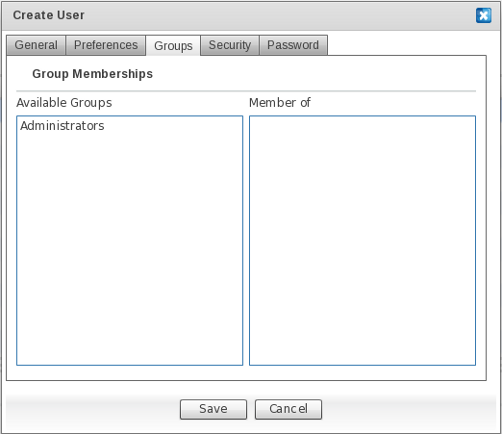
To associate a user to one of the available groups, drag the group entry from the "Available Groups" column, and drop it into the "Member Of" column. If the association is successful, the target group will appear in the "Member Of" column.
To disassociate a user from a group, drag the group entry from the "Member Of" column and drop it into the "Available Groups" column. If the disassociation is successful, the target group will appear in the "Available Groups".
On the Security screen, preferences concerning securing the account may be specified in order to reduce the chances of unauthorized access.
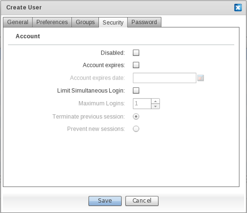
|
Field |
Description |
|
Disabled |
Determines whether the user account is active. Select this checkbox to disable the account. This will block the user from authenticating against Identity Providers bound to an identity vault instance. |
|
Account Expires |
Determines whether the user account will expire. Select this checkbox to restrict the life span of the user account. The specific life span of the account is determined by the "Account expires date" field below. |
|
Account Expiration Date |
Determines the date upon which the account will expire. Enter a date in the .... format. |
|
Maximum Logins |
Maximum logins allowed from this user account. |
|
Terminate Previous Session |
Determines whether, when the user establishes a new session, the previous session has to be terminated. Select this checkbox to terminate the previous session when a new session using this account is established. |
|
Prevent new sessions |
Determines whether the user is entitled to establish a session against an Identity Provider bound to an identity vault instance. |
On the Password screen a user's credentials - namely a password - are provided in order to identify the person owning the account. In addition, preferences that will maintain the security of user credentials by enforcing password freshness and strength may be defined here.
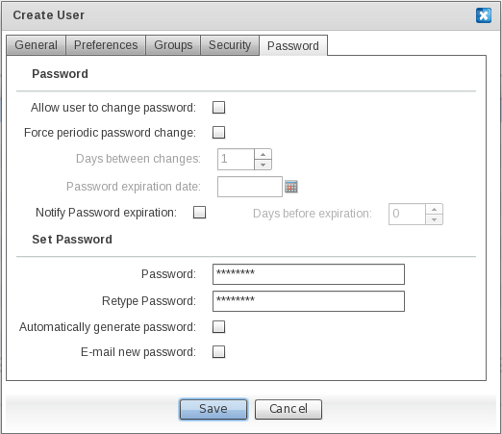
|
Field |
Description |
|
Allow user to change password |
Determines whether the user will be able to update the password. Select this checkbox to allow the user to change their password. |
|
Force periodic password change |
Determines whether the user is informed that the password will expire. Select this checkbox to inform the user that their password will expire. |
|
Days between changes |
If the "Force periodic password change" option is selected, this field sets the maximum number of days before the user is required to change their password. |
|
Password expiration date |
The date the password for the user account will expire. |
|
Notify Password expiration |
Select this checkbox to enable e-mail notifications to the user regarding the approach of the password expiration date. |
|
Days before expiration |
Sets the desired number of days in advance of password expiration for the system to notify the user. |
|
Password |
The password for the user account. |
|
Retype Password |
Verification of the password for the user account. |
|
Automatically generate password |
Select this checkbox to automatically generate a strong password. |
|
E-mail new password |
Select this checkbox to have a new password e-mail sent to the e-mail address for this account. |
To provision a user account, click on the TBD: Insert Image button. Fill in the desired information and click "Save". Username, First Name, Last Name and Password are required.
To edit an existing user account, select the corresponding user entry in the user list and click the TBD: Insert Image button. Modify the fields as needed and click Save.
To search for a user entry, click on the TBD: Insert Image button. A search can be conducted based on Username, First Name, Last Name and Full name criteria. Complete the field with the chosen search criteria and click "Search". If the search is successful, entries for users matching the search criteria will be listed in the user accounts table.
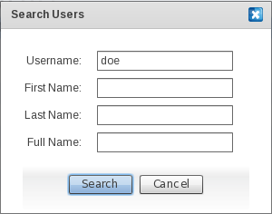
To reach the Group Management screen, go to Account and Entitlement Management on the Main screen and click "Manage Groups".
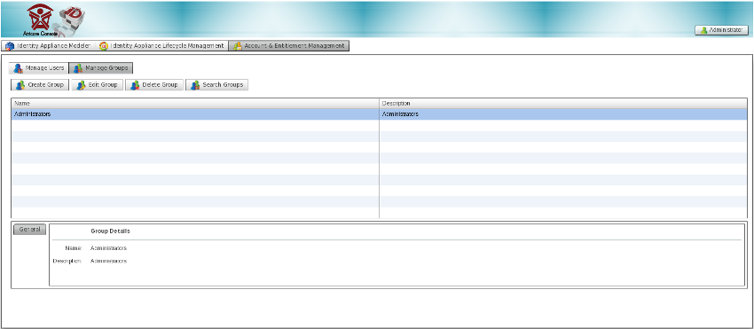
To provision a group, click on the TBD: insert image button. Fill in the information needed and click "Save". The group name is required.
To search for a group, click on the TBD: insert image button. A search can be conducted based on the group name and description. Fill in the field corresponding to the chosen search criteria and click "Search". If successful, the entries for groups matching the search criteria will be listed in the groups table.
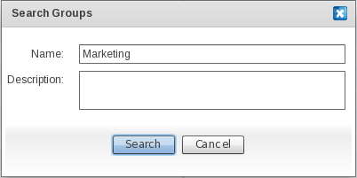
To edit an existing group, select the corresponding group entry in the group table and click the TBD: insert image button. Modify the fields as needed and click "Save".
To deprovision a group, select the target group entry in the groups table and click the TBD: insert image button.
Profile operations enable the Administrator to update an account's credentials, as well as to manage the console session.
To display the profile operations, click the "Administrator" button in the uppermost right corner.
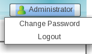
To reach this screen, click the "Change Password" item in the "Administrator" menu.
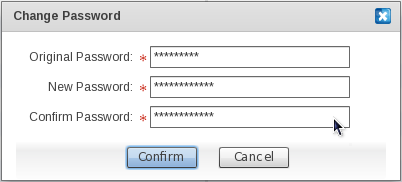
Fill in the fields as needed, and click "Confirm".
If successful, the new password will be used to access the console.